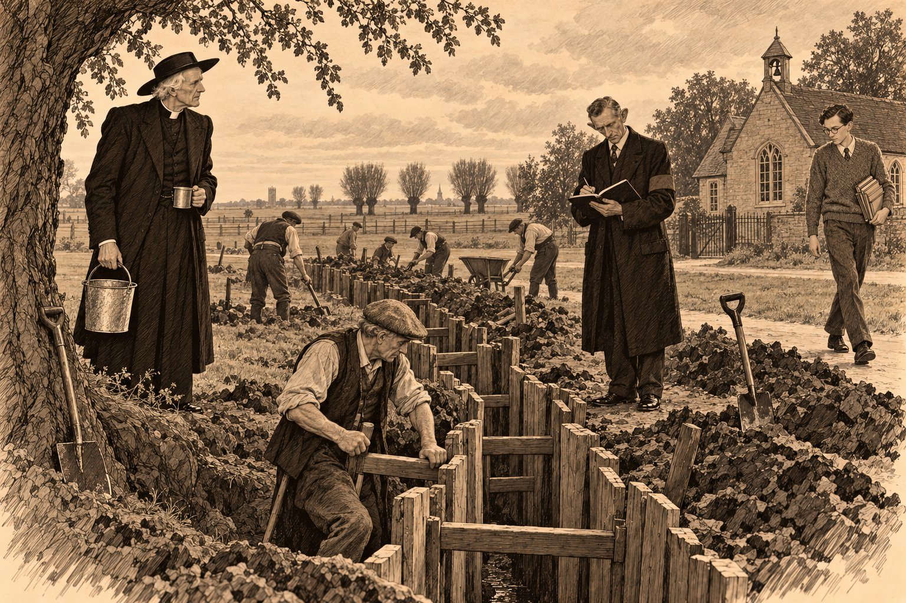

Мир для нашего времени

Дом 1. Дом священника. Преподобный Э. Морс — большой.
Проживает один. С февраля.
С февраля викарий разговаривал с женой вслух.
Он знал за собой эту привычку и стыдился её так, как стыдятся пятна на рукаве: не слишком, но всякий раз, когда замечают. Начиналось это обычно утром, на кухне, когда он не находил сахару там, где сахар стоял сорок три года.
— Агнес, — говорил он, — куда ты дела сахар?
И только потом вспоминал, что сахар переставила миссис Пейн, которая приходила по утрам стряпать и прибирать и которая была уверена, что всякая вещь в чужом доме стоит не на своём месте. Агнес тут была ни при чём. Агнес лежала на кладбище, с южной стороны церкви, под молодым тёрном, который сам посадил там Сирил, потому что, как он сказал, мама терпеть не могла пустых мест.
Вторую чашку викарий перестал ставить на стол только в апреле. До апреля он ставил её каждое утро, наливал и, допив свою, выливал вторую в раковину. Миссис Пейн видела это и ничего не говорила; она была из тех женщин, которые считают, что у мужчин бывают странности и что странности надо мыть вместе с посудой. В апреле он забыл поставить чашку, и это показалось ему изменой, хуже всякой другой. Он сел за стол и долго смотрел на пустое место. Потом сказал вслух: «Прости», — и Ферокс, лежавший у плиты, поднял голову и постучал хвостом по полу, потому что принял это на свой счёт.
Ферокс был молодой, трёхлетний, и, как все Фероксы, цвета мокрого песка. Он считал, что разговоры викария с пустой кухней обращены к нему, и отвечал на них хвостом с вежливостью, которой не ждёшь от мастифа. Пами не отвечал вовсе. Пами было без малого сорок лет — так говорили в деревне, и никто уже не брался проверить. Он лежал на старом сундуке в углу кабинета, маленький и костлявый, как сложенный зонтик, и открывал голубые глаза, только когда викарий входил. Тогда он смотрел на хозяина пристально, как смотрят на человека, который вернулся из другой комнаты и, может быть, принёс оттуда кого-то ещё. Викарий знал, кого он ждёт. Он и сам ждал.
В то утро, в понедельник, двадцать шестого сентября тысяча девятьсот тридцать восьмого года, сахар нашёлся на верхней полке, за банкой с крупой. Викарий ничего не сказал жене. Он уже выучился ловить себя на полуслове и чувствовал при этом что-то вроде маленькой победы, которая хуже поражения.
Он выпил чай, надел сюртук и вышел в сад. Ульи стояли под яблонями, соломенные и один белый, «как маленький дом», и пчёлы ещё летали, медленно и деловито, как люди, которые знают, что дел осталось немного. В феврале он постучал ключом по каждому улью три раза и сказал им про Агнес. Он сделал это сам, раньше всех, раньше, чем позвонил Сирилу. Он помнил, как в восьмом году одна старая женщина спросила у Холмса: «Кто сказал пчёлам?» — и как он сам двадцать лет не мог сказать им про Томми. Про Агнес он сказал сразу. Пчёлы, говорят, не любят, когда от них скрывают смерть. Агнес тоже не любила.
Про Агнес он вообще многое понял поздно и почти всё — от других. От Ребекки Фэрклаф, бабушки Констанс, которая на свадьбе в Линкольне сказала ему: «Ты, Эмброуз, слышишь, когда человек лжёт, а когда молчит — не слышишь. Молчание ведь не ложь». От доктора Окли, который в феврале, после похорон, сел на краешек стула в его кабинете и сказал, глядя в пол: «Она просила меня не говорить. Я дал слово. Теперь, кажется, можно». От письма отца Брауна, пришедшего в марте из Лондона, где было всего две строчки: «Она просила и меня. Простите нас обоих». Он простил. Он только не мог понять, почему ни разу не услышал, как она дышит по ночам. Ведь он слышал, как фальшивит певчий на третьей скамье от органа, и не услышал, как задыхается жена на соседней подушке.
— Потому что она этого не хотела, — сказал он ульям вслух. — Она этого очень не хотела, Агнес. — И замолчал, потому что сказал её имя пчёлам, а не ей.
В полдень пришёл мистер Уорбойс.
Нормана Уорбойса в Сент-Гатлаке знали все, и все его впускали. Это были две разные вещи, и в деревне их не путали. Двадцать пять лет он каждую пятницу обходил дома с толстой книжкой в клеёнке и собирал по пенни, по два, у кого как было записано, за похоронную страховку. Так в Англии страховались бедные люди: пенни в неделю, всю жизнь, и за это тебя хоронят не в общей могиле и не за счёт прихода, а в своём гробу, с цветами и с чаем после. Для английского бедняка нет позора хуже, чем похороны за счёт прихода, и потому мистер Уорбойс был, в сущности, человеком, который продавал людям достоинство в рассрочку, по пенни в неделю.
Он был худой, быстрый, вежливый, в чёрном пальто, которое носил и летом, с маленькой головой и большими ушами, и ездил на велосипеде, ставя ногу на педаль так осторожно, будто педаль тоже была застрахована. Он знал, кто платит вперёд, а кто отстаёт на три недели. Он знал, у кого в доме кашляют, потому что кашель, как он выражался, «касается страховки». Он знал, кто из мужей пьёт по пятницам, потому что в пятницу вечером там не оказывалось пенни. Он знал всё это не из любопытства, а по должности, и потому знание его было хуже любопытства: любопытного можно стыдиться, а от должности не спрячешься.
С весны к его пальто прибавилась нарукавная повязка. Районный совет прислал в Сент-Гатлак бумаги о противовоздушной обороне, и, когда в «Плуге» стали решать, кому быть уполномоченным, — то есть человеком, который в случае налёта знает, кто где живёт, кого куда вести и у кого какой противогаз, — все посмотрели на мистера Уорбойса. Не потому, что его любили. Потому, что он и так знал, кто где живёт. Он согласился сразу и в тот же вечер, говорили, сам сшил себе повязку из чёрной материи и нашил на неё белые буквы. Потом из Слифорда прислали значок, серебряный, с короной, за то, что он прослушал лекции о газах. Значок он носил на лацкане и протирал рукавом, как другие протирают очки.
— Добрый день, ваше преподобие, — сказал он у калитки, не слезая с велосипеда, а только опершись ногой о столб. — Сегодня в шесть — в школе. Примерка противогазов. Вся деревня. Вчера в городах примеряли до полуночи.
— Я слышал, — сказал викарий. — Бидуэлл говорил, по радио это называли «воскресеньем противогазов».
— Так и было, — сказал мистер Уорбойс с удовлетворением, будто воскресенье устроил он сам. — Ваш размер, я полагаю, большой. Лицо у вас длинное. Я по лицам вижу, ваше преподобие, это у меня теперь как у шляпника. Малый, средний, большой. На детей — малый. На младенцев… — он слегка помедлил, — на младенцев пока ничего нет. Обещают.
Викарий хотел что-то сказать, но мистер Уорбойс уже оттолкнулся от столба.
— В шесть, — повторил он через плечо. — Я на всех завёл страничку.
Школа в Сент-Гатлаке была одна комната с высокими окнами и чугунной печкой, и в ней пахло мелом, мокрыми пальто и сорока годами детства. В шесть вечера на партах стояли картонные коробки, а на учительском столе лежали противогазы, разобранные по кучкам, как рыба на прилавке. Резина была чёрная, мягкая и пахла так, как, наверное, пахнет внутренность автомобильной шины, — сладко и неприятно. Окошко было из целлулоида, а спереди торчал короткий металлический цилиндр с дырочками, похожий на рыло.
Мистер Уорбойс стоял у доски с тетрадью. Рядом с ним молоденькая учительница из соседнего прихода, приехавшая на велосипеде помогать, раскладывала коробки. На доске мелом было написано: «НЕ ДЫШАТЬ, ПОКА НЕ НАДЕНЕТЕ», и кто-то из детей уже успел приписать внизу «и потом тоже».
Деревня шла по очереди, и викарий, который знал её всю по именам, видел её в тот вечер так, как никогда не видел, — без лиц. Человек входил, садился на табурет, мистер Уорбойс натягивал ему на голову резиновые ремни, говорил: «Вдохните», — подносил к цилиндру кусочек тонкой бумаги, и если бумажка прилипала, значит, противогаз сидел плотно. Тогда он говорил: «Годится», — и что-то записывал. Человек снимал маску, и лицо у него на минуту оставалось удивлённым и красным, как у ребёнка, которого вытащили из-под одеяла.
Бидуэлл, хозяин «Плуга», сказал, что в таком виде его не узнает собственная жена и что, может быть, это к лучшему; все засмеялись, потому что это было приятно — засмеяться в такой вечер. Миссис Бидуэлл, когда до неё дошла очередь, сказала, что муж не узнаёт её и без противогаза. Засмеялись снова, уже тише.
Молодой мистер Эйвери, учитель этой самой школы, стоял у окна и не подходил. Он был длинный, бледный, в очках и в пуловере, связанном, видимо, кем-то, кто его очень любил и плохо вязал. Когда мистер Уорбойс назвал его фамилию, он сказал:
— Благодарю вас. Я не буду.
— Это не от меня зависит, мистер Эйвери, — сказал уполномоченный. — Это от правительства.
— От правительства зависит, будет ли война, — сказал Эйвери. — А надевать ли мне на голову эту вещь, зависит от меня. Я не хочу репетировать конец света. Я лучше буду учить детей, пока он не наступил.
В классе стало тихо. Мистер Уорбойс что-то записал и сказал, не поднимая головы:
— Я записал, мистер Эйвери. Всё записано.
Викарий много раз слышал, как говорят «всё записано». Так говорят о Страшном суде. Он никогда не думал, что это можно сказать про школьный класс.
Потом на табурет села молодая женщина в тёмно-синем пальто, и уполномоченный, прежде чем взять маску, посмотрел в тетрадь дольше, чем на других. Это была мисс Беккер, домоправительница доктора Окли. Она приехала весной, после того как немцы вошли в Австрию, и в деревне её звали «немкой доктора», хотя она была из Вены и хотя в Вене, как объяснил однажды викарию доктор, её теперь не считали ни австрийкой, ни немкой, а только еврейкой, что, по мнению тамошних властей, было хуже обоих. Дома она была юристом. Здесь она варила доктору овсянку, вела его книги и разговаривала с ним по вечерам о Шуберте. У неё была очень прямая спина и очень правильный английский — правильней, чем у всех в классе.
Она не стала ждать, пока ей натянут ремни. Взяла маску из рук уполномоченного, вставила подбородок, потянула ремни назад, поправила и вдохнула. Бумажка прилипла сразу.
— Откуда фрейлейн знает, как это надевается? — спросил мистер Уорбойс громко, на весь класс.
Она сняла маску. На щеках у неё остались красные полосы от резины.
— Я читала инструкцию, мистер Уорбойс, — сказала она. — По-английски. Там на коробке напечатано.
Кто-то засмеялся, но не над ней. Мистер Уорбойс записал.
Викарию большой противогаз пришёлся впору. Он сидел на табурете, дышал резиной и смотрел сквозь мутный целлулоид на свою деревню, и деревня стала похожа на картинку в старой книге, где всё немного жёлтое и немного не в фокусе. Он подумал, что под Лосом, в сентябре пятнадцатого, газ пустили англичане и кое-где ветер понёс его назад и что Томми, наверное, тоже дышал — только не резиной, а мокрой фланелью противогазного мешка, и тоже смотрел сквозь мутное окошко на мир, который становился жёлтым. Томми никогда не писал об этом домой. Томми писал про погоду.
— Годится, — сказал мистер Уорбойс над самым ухом. — Большой. Я же говорил.
Последним в класс вошёл старый Джетро Пёрди. Он работал на осушительных каналах — чистил их, углублял и подрезал берега, — с тех пор как викарий его помнил, и с тех пор как викарий его помнил, руки у него были как корни, вывернутые из торфа. Он был в той же куртке, в какой работал, и от него пахло стоячей водой. Он молча сел, молча вдохнул, молча дал бумажке прилипнуть.
— Большой, — сказал уполномоченный. — Сколько вас в доме, мистер Пёрди?
— Один, — сказал старик.
Мистер Уорбойс что-то записал. Викарий в это время надевал пальто и не смотрел на них. Позже, гораздо позже, он пытался вспомнить, как это прозвучало, и не мог: он не слушал. Он думал о жёлтом свете за целлулоидом и о том, что Агнес было бы смешно увидеть его в этой маске. Агнес сказала бы, что он похож на муравьеда, который принял сан.
У двери мистер Уорбойс его догнал.
— Вот видите, ваше преподобие, — сказал он, похлопывая ладонью по тетради. — Вся деревня. У меня теперь на каждого страничка. Как у вас.
— У меня не страничка, — сказал викарий. — У меня строчка. И то не у меня.
— А у кого же?
— У книги, — сказал викарий. — Я только пишу.
Мистер Уорбойс засмеялся коротким, сухим смехом, похожим на звук, с каким захлопывают кошелёк.
В «Плуге» в тот вечер слушали радио. Бидуэлл держал его на стойке с Рождества двадцать пятого года, и за тринадцать лет оно успело сообщить деревне о всеобщей стачке, о смерти одного короля, об отречении другого и о коронации третьего. Сегодня оно сообщало, что в Берлине, во Дворце спорта, рейхсканцлер больше часа говорил перед двадцатью тысячами человек и сказал, что это его последнее территориальное требование в Европе.
— Последнее, — повторил Бидуэлл. — Слышали? Последнее.
— Так все говорят, — отозвался кто-то из угла. — Моя тёща тоже говорит «последний раз приезжаю».
Старого Хаммонда, который сорок лет сидел у камина в углу и на все новости отвечал, что король останется, а хозяева уйдут, похоронили весной, в один день с первым цветом на тёрне, и его кресло так никто и не занял. Викарий посмотрел на пустое кресло и подумал, что Хаммонд, наверное, и теперь сказал бы что-нибудь про короля. Он выпил свою кружку — одну, медленно, — и пошёл домой.
На почте, когда он проходил мимо, ещё горел свет. Младшая миссис Ласселс, которая держала почту после матери, высунулась в дверь и протянула ему бумажку.
— Телеграмма, ваше преподобие. Из Линкольна. Я хотела утром принести, а потом думаю — вдруг что.
Телеграмма была короткая: «ПРИВЕЗУ ВСЕХ ЗАВТРА К ОБЕДУ ЗДЕСЬ РОЮТ ЩЕЛИ В ПАРКЕ СИРИЛ».
Викарий прочёл её у фонаря дважды. «Всех» значило: Констанс, её бабушку и мальчика, которому сегодня исполнилось две недели и которого он ещё ни разу не видел, потому что в Линкольн из-за подагры не доехал, а Сирил сказал, что двухнедельных не возят. Двухнедельных, выходило, всё-таки возили — когда в парке роют щели.
Дома он сел в кабинете, не зажигая лампы. Пами на сундуке открыл глаза.
— Завтра, — сказал ему викарий. — Завтра привезут.
И только сказав, понял, что сказал это не коту.
⁂
Дом 1 (доп.). Прибыли из Линкольна: Морс С. — большой; Морс К. — средний; Фэрклаф Р. — малый.
Младенец, мальчик, 15 дней — нет. Обещают.
Сирил приехал к обеду, на такси.
Такси было не Сирила, а конторы, которую после смерти Доррингтона держал брат покойного, из Гейнсборо, — чёрный «Остин» с ровным, рассудительным мотором. Сирил выпросил его на два дня, сказав хозяину, что везёт пассажиров в Стамфорд, и это была правда, хотя пассажиры ничего не платили. Он подъехал к калитке, вылез, обошёл машину и открыл заднюю дверцу с той особенной осторожностью, с какой шофёры открывают дверцы епископам и новобрачным.
Сначала вышла бабушка Ребекка, в сером платье и кружевной косынке, такая же прямая, как в мае. Ей было восемьдесят четыре года, и она, кажется, считала возраст чем-то вроде погоды: о нём можно сказать, но не стоит жаловаться. Она огляделась, увидела церковь, ульи, викария у калитки и Ферокса, который от восторга сел на собственный хвост.
— Здравствуй, Эмброуз, — сказала она. — Хорошо тут у тебя. Тихо. В Линкольне роют ямы в парке, а тут, я вижу, только пчёлы.
Потом вышла Констанс, и на руках у неё был свёрток в белой шали.
Викарий, который за сорок четыре года держал на руках, наверное, тысячу младенцев, — над купелью, у дверей, в чужих кухнях, — вдруг не знал, куда деть руки. Он держал их за спиной, как держит их человек в музее, где написано «руками не трогать». Констанс подошла и, ничего не говоря, отогнула край шали.
Мальчик спал. Он был маленький, красный и сердитый, с тёмными, почти чёрными волосами — материнскими, — и спал он, нахмурившись, как будто во сне проверял что-то очень важное и находил ошибку за ошибкой. Викарий смотрел на этот нахмуренный лоб и не сразу понял, где видел его раньше. Потом понял: так хмурилась Агнес над счетами от мясника.
— Возьмите, — сказала Констанс.
Он взял. Свёрток весил меньше, чем приходская книга, и больше, чем всё остальное.
— Здравствуй, — сказал викарий. Он хотел сказать ещё что-то, может быть, имя, но имени у мальчика пока не было. Констанс в письме написала: «Имя придёт», — и викарий, читая, подумал, что так пишут квакеры, а потом подумал, что так могла бы написать и Агнес.
Сирил стоял рядом, усталый, небритый, пахнущий бензином, и смотрел не на сына, а на отца. Он улыбался той улыбкой, которую викарий помнил с тех пор, как Сирилу было пять лет и он принёс домой ежа в шапке.
— Я зову его Юнгой, — сказал он. — Пока имени нет. Он же у нас самый младший на борту.
— Юнга, — повторил викарий. — Ну что ж. Добро пожаловать на борт, юнга.
Мальчик открыл глаза, тёмно-серые, ничего ещё не видящие, посмотрел ими куда-то мимо деда, в небо над церковью, и снова нахмурился.
За обедом говорили о Линкольне. В парке у Арборетума с понедельника роют щели, сказал Сирил, ночью, при фонарях, и горожане ходят смотреть, как на ярмарку. В конторе все шофёры записались в какие-то отряды, и брат Доррингтона уже выкрасил крылья машин белой краской, чтобы их было видно в темноте, если погасят фонари. Констанс сказала, что в воскресенье в молитвенном доме Друзей сидели в молчании дольше обычного. Ребекка сказала, что в восемьдесят четыре года ей не страшно, а ему, — и кивнула на корзинку у печи, где спал мальчик, — страшно не может быть, он ещё не знает, чего бояться, так что бояться в этом доме приходится только Сирилу и Констанс, и пусть они не стесняются.
Викарий молчал и слушал. Он не сказал им, что утром, в семь, пошёл в церковь с ведром и тряпкой и вычистил купель: старую, нормандскую, с каменными львами, похожими на добродушных овец. Он вычистил её так, как не чистил с тех пор, как крестил Сирила, сменил воду в кувшине и положил на край чистое полотенце. Он сделал это, ни о чём не думая, как делают то, что делали всю жизнь. Потом сел на скамью и подумал.
После обеда, когда Сирил вышел к машине, а Констанс кормила мальчика в спальне наверху, викарий остался на кухне с Ребеккой. Она пила чай и смотрела в окно на церковь.
— Ты её вычистил, — сказала она, не оборачиваясь.
— Кого?
— Купель, Эмброуз. У тебя на рукаве известь. И на колене. Ты стоял на коленях у купели.
Он посмотрел на рукав. Известь была.
— Мы не крестим, — сказала Ребекка тем же голосом, каким говорила про погоду и про возраст. — Ты это знаешь. Мы не против тебя. Мы просто не крестим. У нас одно крещение — Духом, а водой мы никого не мочим. Констанс тебе этого не скажет первой, потому что она тебя любит и тебя жалеет. Поэтому говорю я. Я старая, меня жалеть не надо.
— Я знаю, — сказал викарий. — Я не прошу.
Ребекка повернулась и посмотрела на него. Она смотрела долго, и он вспомнил, что так же смотрела на него Агнес, когда он говорил «я не устал».
— Ты знаешь, — сказала она. — И ты не просишь. А купель вычистил.
В четыре пришёл мистер Уорбойс. Он оставил велосипед у калитки, вошёл, не дожидаясь приглашения, — он никогда его не дожидался, потому что за двадцать пять лет привык, что двери, в которые он стучит, открываются ему, как открываются двери перед доктором, — и раскрыл свою тетрадь на кухонном столе.
— Новые жильцы, ваше преподобие, — сказал он. — Я обязан внести. Если завтра налёт, я должен знать, кто где ночует. Миссис… — он посмотрел на Ребекку, и Ребекка посмотрела на него.
— Фэрклаф, — сказала она. — Ребекка. Восемьдесят четыре года. Пиши, пиши, сынок, я подожду.
Он записал её, и Констанс, и Сирила, примерил им маски, которые привёз в коробках на багажнике, — Ребекке, после двух попыток, малую, — и всякий раз подносил к цилиндру бумажку и говорил «годится» с удовлетворением ювелира. Сирил надел свою, посмотрел сквозь целлулоид на отца и сказал из резины глухо, как из бочки:
— Похож я на капитана Кука?
— На его водолаза, — сказала Ребекка.
Констанс надела маску последней и сняла её первой. На лице у неё остались красные полосы. Она посмотрела на корзинку у печи.
— А для него? — спросила она.
Мистер Уорбойс закрыл тетрадь.
— Для младенцев пока ничего нет, миссис Морс, — сказал он, и викарий в первый раз услышал в его голосе что-то похожее на смущение. — Обещают. Говорят, в производстве. Я спрашивал в Слифорде. Если что, говорят, завернуть в мокрое одеяло и…
Он не договорил. Констанс кивнула. Она ничего не сказала, и лицо у неё осталось таким же, как было, но она подошла к корзинке, взяла мальчика на руки и стояла с ним всё время, пока мистер Уорбойс собирал коробки. Викарий заметил, что она стоит между корзинкой и окном, словно газ мог войти именно через окно.
У двери уполномоченный обернулся.
— Покойная миссис Морс, — сказал он, — была у меня самой аккуратной клиенткой, ваше преподобие. Я хотел вам сказать ещё в феврале, да не к месту было. Три года по два пенни в неделю, и ни разу не отстала. Ни разу. Такое не часто бывает.
Викарий не понял.
— Клиенткой? — переспросил он.
Мистер Уорбойс посмотрел на него, и лицо у него стало осторожным, как у человека, который ступил на лёд и услышал, как лёд хрустнул.
— Полис, ваше преподобие, — сказал он медленнее. — Похоронный. На неё самоё. С весны тридцать пятого года. Она приносила мне сама, в пятницу, на почту, чтобы я не ходил к вам в дом. Похороны были оплачены. Я в феврале всё отдал гробовщику, как положено. Вы… — он помолчал, — вы, стало быть, не знали.
Викарий вспомнил, как в феврале гробовщик из Стамфорда сказал ему: «Тут всё уплачено, сэр, не извольте беспокоиться», — и как он, ничего не соображая в те дни, решил, что заплатил Сирил, и не спросил, а Сирил решил, что заплатил отец, и тоже не спросил. Три года. С весны тридцать пятого — значит, за год до Уитема, за год до того, как отец Браун увидел, как она дышит на лестнице. Она узнала раньше всех — и первым делом пошла на почту платить за свои похороны по два пенни в неделю, чтобы мужу не пришлось.
— Не знал, — сказал викарий. — Спасибо, мистер Уорбойс.
Уполномоченный кивнул и вышел, и викарий слышал, как он ведёт велосипед по дорожке, стараясь не звенеть звонком.
Вечером в «Плуге» было тесно, как на Рождество, но тихо, как на похоронах. Бидуэлл повернул ручку приёмника до отказа, и голос премьер-министра заполнил комнату, усталый, немолодой, очень правильный голос человека, который всю жизнь говорил разумные вещи разумным людям. Он сказал, что это ужасно, фантастично, невероятно — что здесь, в Англии, роют траншеи и примеряют противогазы из-за ссоры в далёкой стране, между людьми, о которых мы ничего не знаем.
В «Плуге» никто не шевельнулся. Потом кто-то у стойки сказал вполголоса:
— Так ведь и правда. Ничего мы про них не знаем.
Викарий стоял у двери рядом с Сирилом. Он слушал не слова, а голос, по привычке, которую не мог в себе унять, как не может музыкант не слышать, что скрипка в соседней комнате расстроена. Голос был честный. В нём было много усталости, много надежды и немного того, что викарий назвал бы самоуважением, будь оно у другого человека и в другой вечер. Фальши он не услышал. Человек говорил правду — свою, ту, которую видел. Викарий подумал, что это хуже всякой фальши, но не сумел бы объяснить почему.
Он оглянулся и увидел в тёмном окне лицо. Это была мисс Беккер. Она стояла снаружи, под окном, на холоде, в своём тёмно-синем пальто, и слушала радио сквозь стекло. Лица её он почти не разглядел — только то, что оно не двигалось.
Когда передача кончилась, он вышел к ней.
— Зайдите, мисс Беккер. Там тепло.
— Благодарю вас, — сказала она. — Мне лучше здесь. Здесь меня не видно, а слышно всё. Вы знаете, ваше преподобие, у доктора Окли нет радио. Он говорит, что радио — это когда в доме всё время кто-то разговаривает, а он и так всю жизнь слушает чужие лёгкие.
— А вам нужно радио?
Она помолчала.
— Мои родители в Вене, — сказала она. — Брат в Праге. Брат — в той самой далёкой стране. Я не знаю, что о них можно сказать по радио, но я хочу это слышать первой. — Она улыбнулась краем рта. — Премьер-министр прав. Вы ничего о нас не знаете. Это не упрёк. Это просто правда.
Она пожелала ему доброй ночи и ушла по тёмной улице к дому доктора, держа очень прямо спину.
Дома, в кабинете, викарий долго сидел, не зажигая лампы. Наверху, за потолком, Констанс ходила взад и вперёд с мальчиком на руках, и половицы отвечали ей каждая своим голосом — он знал их наизусть, все одиннадцать. Пами на сундуке смотрел на него.
— По два пенни, — сказал викарий в темноту. — Три года. Ты пошла и заплатила за свои похороны, Агнес. Как будто я бы не похоронил тебя сам.
Ему стало стыдно, что он сердится, и он перестал. Потом подумал, что она именно этого и хотела: чтобы ему было на что сердиться, а не только о чём горевать. Это было на неё похоже. Это было так на неё похоже, что он засмеялся в тёмном кабинете, один, — и Пами, не любивший громких звуков, неодобрительно закрыл глаза.
⁂
Щель на лужайке у школы. Длина 30 футов, глубина 4 фута 6 дюймов. Распорки — Дж. Пёрди.
Мистер Эйвери копать отказался. Записано.
В среду утром газеты, которые привёз из Стамфорда почтовый фургон, вышли с одним заголовком на всех: флот мобилизуют. Младшая миссис Ласселс разложила их на прилавке, как раскладывают карты, когда гадают, и деревня брала их молча, не торгуясь из-за пенни, — что в Сент-Гатлаке было вернее всякого заголовка.
К девяти на лужайке у школы уже копали. Районный совет прислал мистеру Уорбойсу бумагу, в которой говорилось, что в сельской местности щели лучше рыть в открытом поле, подальше от строений, и что глубина должна быть четыре фута шесть дюймов. Мистер Уорбойс решил, что лужайка у школы — это и есть открытое поле, а дети — это и есть те, кого надо прятать в первую очередь, и разметил щель колышками и бечёвкой ещё во вторник вечером, при фонаре. Щель шла поперёк лужайки, от старого вяза к школьной ограде, коленом посередине, как молния на рисунке в детской книжке. Колено, объяснил он, — чтобы осколок не пролетел вдоль всей щели. Он прочёл это в той же бумаге.
Копали все, кто мог держать лопату: Бидуэлл, двое работников с фермы Тиббета, кузнец, почтальон, Сирил в отцовском старом свитере и сам викарий — первые полчаса, пока подагра не напомнила ему, что он не работник с фермы. Верхний слой шёл легко: чёрный торф, жирный и мягкий, как хлеб, который не пропёкся. Под ним на глубине двух футов начался ил — серый, мокрый, тяжёлый. Он не копался, а резался, и стоило вынуть пласт, как стенка рядом медленно, почти незаметно для глаза, начинала ползти вниз, будто земля пробовала затянуть рану.
— Плывёт, — сказал Бидуэлл и выпрямился. — Мистер Уорбойс, она у нас плывёт.
— Фены, — сказал старый Пёрди.
Он копал на дальнем конце, у вяза, один, и на его конце щель была уже глубже, чем у всех, и стенки стояли ровно, как в погребе. Лопата у него была своя, не та, что раздали из сарая районного совета: длинная, узкая, с железной окантовкой по краю, с ручкой, отполированной за сорок лет до цвета старой кости. Такими лопатами в Фенах режут торф и подрезают берега каналов. Он работал ею не как землекоп, а как портной ножницами — коротко, точно, без лишнего движения. Викарий, стоя рядом с ведром, смотрел на него и думал, что никогда в жизни не видел, как работает Джетро Пёрди, хотя сорок лет видел его каждое воскресенье на последней скамье.
— Без распорок к утру сядет, — сказал Пёрди, не поднимая головы. — Надо доски. И колья.
Доски нашлись у плотника, колья вырубили у ручья. Пёрди ставил их сам: доски вдоль стенок, стоймя, а между ними поперёк щели — распорки, которые он загонял ударом ладони так, что они держали обе стенки сразу, как держат друг друга два человека, упёршихся лбами. Сирил, который на море видел, как крепят груз в трюме, сказал, что это сделано по-морскому, и старик посмотрел на него впервые за всё утро — коротко, без улыбки, как смотрят на человека, который понимает.
Мистер Уорбойс ходил по краю щели с тетрадью и записывал. Он записал, сколько футов вырыто, сколько досок пошло, кто копал и сколько часов.
— Вам ли не знать про ямы, Пёрди, — сказал он громко, остановившись над стариком. — Вы всю жизнь в канаве.
Кто-то засмеялся. Пёрди не ответил. Он вогнал ещё одну распорку, и распорка вошла с таким звуком, что смеявшийся перестал.
Молодой мистер Эйвери прошёл мимо лужайки в школу с пачкой тетрадей под мышкой. Он посмотрел на щель, на людей в ней, на мистера Уорбойса с тетрадью и сказал — не громко, но в тишине это было слышно:
— Вы роете могилы, джентльмены. Вы просто называете их по-другому.
— Записано, мистер Эйвери, — сказал уполномоченный, не оборачиваясь.
— Я знаю, — сказал Эйвери. — У вас всё записано.
В одиннадцать пришли Ребекка и Констанс — с чайником, с кружками в корзине и с мальчиком в шали. Ребекка разливала чай, стоя на краю щели и подавая кружки вниз, как подают с причала на лодку.
— Мы не воюем, — сказала она мистеру Уорбойсу, когда тот посмотрел на неё, как смотрят на человека, о котором что-то слышали. — А чай — не война. Чай, сынок, это чай. Пей, пока горячий.
Мистер Уорбойс выпил чай. Викарий заметил, что Пёрди, когда ему подали кружку, отошёл с ней к вязу и пил спиной к людям, глядя через поля туда, где стоял его дом — низкий, кирпичный, на самом краю деревни, у канавы, за ивами.
К вечеру щель была готова: тридцать футов, колено посередине, стенки в досках, распорки, на дне вода, которая просочилась из ила и стояла там тёмная и неподвижная, как в колодце. Мистер Уорбойс принёс две доски и положил их на дно, чтобы не ходить по воде, и сказал, что будет проверять щель каждый вечер, потому что за щелью нужен глаз, как за ребёнком.
В шесть Бидуэлл включил радио и открыл окно «Плуга», чтобы слышала лужайка. Диктор рассказывал, что в палате общин премьер-министр говорил больше часа о том, как ездил в Германию, и что под конец ему передали записку, и он, прочитав её, сказал, что господин Гитлер приглашает его завтра утром в Мюнхен, вместе с синьором Муссолини и месье Даладье, и что ему незачем говорить, каков будет ответ. И что в палате встали и кричали, и что кто-то крикнул: «Слава Богу за премьер-министра!»
На лужайке тоже закричали «ура». Кричали в щели, стоя по пояс в земле, и кричали на краю, и Бидуэлл в окне кричал, держа в руке тряпку, которой вытирал кружки. Кузнец бросил шапку вверх, и шапка упала в щель, в воду. Викарий не кричал. Он стоял у вяза, держа пустую кружку, и смотрел на людей в щели, которые кричали «ура» из ямы, вырытой на случай, если всё кончится плохо. Ему показалось, что он видит что-то, что надо запомнить, но он не знал, что именно.
Пёрди тоже не кричал. Он вытер свою лопату пучком травы, взял её на плечо и пошёл через поля домой, и никто не заметил, как он ушёл.
За ужином викарий сказал, глядя в тарелку:
— В воскресенье у нас Праздник урожая. Снопы, тыквы, вся деревня в церкви. И, видно, благодарственный молебен за мир, если завтра… — он помолчал. — Я подумал, что после службы было бы хорошо…
— Нет, — сказала Констанс.
Она сказала это без всякого нажима, тем голосом, каким в мае на дознании отказалась присягать на Библии, — ровно, негромко и окончательно, как кладут на стол последнюю карту, которую нечем бить.
— Я ещё ничего не сказал, — сказал викарий.
— Вы сказали «было бы хорошо», — ответила Констанс. — И вычистили купель. Бабушка мне сказала. Я не говорю, что вы неправы. Я понимаю, почему вы этого хотите, и мне от этого не легче. Я говорю — нет.
Сирил положил вилку.
— Отец… — начал он, и викарий увидел, что сын не знает, как кончить фразу, и что его тянет в обе стороны сразу, как распорку в той щели.
— Твоя мать крестила бы его в первый же день, — сказал викарий. Он не хотел этого говорить. Это было нечестно, потому что Агнес нельзя было спросить, и все трое знали, что нельзя. — Тебя мы крестили, когда тебе не было и недели.
— Мама, — сказал Сирил тихо, — мама бы спросила Констанс.
Это была правда. Викарий услышал в ней правду, ту самую, без единой неверной ноты, которую слышал всю жизнь, и правда эта была против него.
Ребекка поставила чашку.
— Он уже наш, Эмброуз, — сказала она. — У нас ребёнок Друзей — член собрания с рождения. Его никуда не надо принимать. Ему не надо никуда вступать. Он уже дома.
— А если завтра газ? — сказал викарий.
Он сказал это и тут же пожалел, потому что Констанс побледнела, как бледнеют от удара, а не от страха. Но ответила она так же ровно:
— Если завтра газ, отец, Бог не станет спрашивать, мокрый у него лоб или сухой.
Викарий хотел возразить и не смог, потому что вспомнил, где слышал это раньше, — не эти слова, а их смысл. Двадцать семь лет назад, на ферме в Эссексе, у колыбели Сирила, маленький круглолицый священник другой церкви сказал ему: «Бог не связан таинствами — связаны мы». Викарий тогда записал это на полях. Теперь эти слова стояли на стороне его невестки, и он ничего не мог с ними поделать, потому что сам когда-то вписал их в книгу.
После ужина он ушёл навестить старую миссис Хойл, которая третью неделю лежала с бронхитом в предпоследнем доме по Ивовой дороге. Он просидел у неё час, читал ей псалмы, и она спала под них, как под дождь. Возвращался он в десятом часу, в темноте, по той же дороге, мимо дома Пёрди.
У калитки Пёрди стоял велосипед с зажжённым фонарём. Фонарь светил в куст боярышника, и куст казался декорацией. В доме горел свет, дверь была приоткрыта, и из двери шли голоса — два. Один был мистера Уорбойса, высокий, быстрый, и он что-то говорил, отчеканивая слова, как отчеканивал их в школе: «вдохните», «годится». Другой был низкий и короткий, и викарий не узнал бы в нём голос Пёрди, если бы не знал, чей это дом. Слов он не разобрал. Он разобрал только одно, потому что уполномоченный сказал его громче остальных, уже повернувшись к двери:
— …в понедельник!
Викарий прошёл мимо. Он не замедлил шага, потому что подслушивать у чужой калитки было не в его правилах, а ещё потому, что думал о другом: о купели, о сухом лбе, о том, что Агнес спросила бы Констанс. Он вспомнил об этом голосе у калитки только на другой день, да и то мимоходом. И потом долго не мог себе простить, что тогда не остановился.
⁂
29 сент., Михайлов день. Щель проверена в 10 веч. Вода на дне — 3 дюйма.
Распорки держат.
В четверг пошёл дождь.
Он начался ещё ночью, мелкий и упорный, как бывает в Фенах осенью, когда небо не льёт, а сочится, и к утру лужайка у школы стала тёмной, а вода на дне щели поднялась до досок. Сирил уехал в шесть, в темноте, потому что в восемь у него была смена: такси в Линкольне не ждут, пока в Мюнхене договорятся. Он постоял у кроватки, не снимая кепки, потом наклонился и что-то сказал сыну, так тихо, что викарий в дверях не расслышал. Потом обнял жену, бабушку и отца — отца последним и крепче, чем в мае, — и уехал, и рассудительный мотор «Остина» ещё долго был слышен над мокрыми полями.
В десять по радио в «Плуге» сказали, что премьер-министр вылетел из Хестона в Мюнхен. Больше ничего не говорили весь день, и деревня жила в этом «больше ничего», как живут в приёмной у врача: разговаривали вполголоса, о пустяках, и каждый раз, когда открывалась дверь, все оборачивались.
Был Михайлов день, праздник святого Михаила и всех ангелов. Викарий отслужил утреню для четверых — для двух старух, церковного сторожа и Ребекки, которая пришла и села на последнюю скамью и не молилась вместе со всеми, но и не мешала, а просто сидела очень тихо, как сидят у Друзей. Он прочёл из Откровения про войну на небе — Михаил и ангелы его воевали против дракона — и подумал, что никогда ещё этот отрывок не звучал в его церкви так буднично. Дракон, архангел, низвержение — это было всё равно что читать вслух вчерашнюю газету.
— У вас ангел воюет, — сказала Ребекка на крыльце, раскрывая зонт. — И все этому рады.
— Он воюет с драконом, — сказал викарий.
— Все так говорят, — сказала Ребекка. — Каждый, кто воюет, воюет с драконом. Ещё никто не воевал с человеком.
Днём к викарию пришёл мистер Эйвери. Он стоял в прихожей, не снимая мокрого плаща, и с плаща на пол текло, и он извинялся за это так долго, что викарий понял: пришёл он совсем не затем, чтобы извиняться за плащ.
— Мистер Уорбойс сказал мне сегодня, — сказал наконец Эйвери, — что напишет обо мне в отдел образования графства. Что учитель, который отказывается от противогаза и называет щели могилами, учит детей неповиновению властям. Он сказал, что у него всё записано и что в понедельник письмо уйдёт. Ваше преподобие, я не прошу вас… Я хотел спросить: вы председатель школьного совета. Если придёт письмо…
— Если придёт письмо, — сказал викарий, — я его прочту. И напишу, что вы хороший учитель. Вы ведь хороший учитель?
— Не знаю, — честно сказал Эйвери. — Дети меня любят. Но это, может быть, потому, что я не ставлю им отметок за поведение.
Викарий засмеялся, и Эйвери, удивлённый, тоже засмеялся, и ушёл под дождь немного выше ростом, чем пришёл. Викарий смотрел ему вслед и думал, что мистер Уорбойс за последние три дня обещал что-то «в понедельник» уже второй раз, а может быть, и третий, если считать тот голос у калитки. Он подумал это мимоходом, как думают о том, что в доме надо починить ступеньку, — без всякого намерения чинить её сегодня.
Вечер был тёмный, без луны. Новолуние было неделю назад, и молодой месяц, тонкий, как обрезок ногтя, ушёл за ивы задолго до десяти. Дождь к ночи перестал, но небо осталось низким и мокрым, и за окнами не было ничего, кроме собственного отражения в стекле.
Мальчик плакал с десяти.
Он плакал не громко, но упорно, как дождь днём, и Констанс ходила с ним по спальне наверху, а половицы отвечали ей каждая своим голосом. В половине одиннадцатого викарий поднялся к ней и постучал.
— Дайте мне его, — сказал он. — Вы третью ночь не спите. Я всё равно не сплю. Я старый, у меня бессонница по чину.
Констанс посмотрела на него долгим, усталым взглядом. Потом молча отдала ему сына, легла поверх одеяла, не раздеваясь, и заснула, кажется, раньше, чем он закрыл дверь.
Викарий спустился в кабинет и стал ходить с мальчиком от двери к окну и обратно. Он делал это сорок лет назад с Томми и двадцать восемь лет назад с Сирилом, и руки, оказалось, всё помнили: как держать голову, как покачивать на ходу не вверх-вниз, а немного вбок, как море качает лодку. Мальчик ещё немного поплакал, проверяя, не ошибся ли он в этом новом человеке, потом затих и уткнулся лицом в чёрный сюртук.
Пами на сундуке открыл глаза и смотрел. Он смотрел на свёрток в руках хозяина, не мигая, — голубыми глазами, в которых горела настольная лампа, — с тем выражением, с каким смотрят на нового прихожанина, о котором ещё не решили, допускать ли его к причастию.
— Это наш, — сказал ему викарий шёпотом. — Это Сирилов. Тебе он понравится. Он тоже хмурится.
Чтобы мальчик не проснулся, викарий заговорил с ним вполголоса — о чём придётся. Он рассказал ему, что сегодня Михайлов день и что в этот день в старину платили за аренду и ели гуся. Что у архангела Михаила в руке весы, на которых он взвешивает души, и что викарий всегда немного боялся этих весов и немного на них надеялся. Что у мальчика был дядя, которого звали Томми, и что Томми писал домой про погоду, и что это, наверное, у них в роду. Что бабушку мальчика звали Агнес и что она заплатила за свои похороны по два пенни в неделю, чтобы никого не затруднять, и что это тоже, может быть, в роду, хотя лучше бы нет.
Около одиннадцати он остановился у окна.
Из окна кабинета, через кладбищенскую ограду и голые кусты, была видна лужайка у школы — днём, а ночью только тёмное пространство, на котором ничего нельзя было различить. Но сейчас по этому тёмному пространству двигался огонёк. Маленький, жёлтый, он шёл от деревенской улицы через лужайку не спеша, покачиваясь, как качается фонарь в руке идущего человека, и остановился где-то у вяза, на дальнем конце щели. Там он постоял. Потом опустился — ниже, ещё ниже, будто человек с фонарём спускался по ступенькам в погреб, — и стал тусклым, жёлтым пятном у самой земли.
«Уорбойс», — подумал викарий. Мистер Уорбойс говорил, что будет проверять свою щель каждый вечер, как ребёнка. Вот он и проверяет. Викарий даже улыбнулся: было что-то трогательное в человеке, который в одиннадцать часов ночи, когда в Мюнхене решается, быть ли войне, идёт посмотреть, не размокли ли его распорки.
Мальчик на плече вздохнул, и викарий отвернулся от окна, чтобы поправить шаль. Когда он снова посмотрел на лужайку, огонька не было.
Он не удивился. Человек мог пойти дальше, за школу, и фонарь заслонила ограда. Человек мог погасить фонарь, чтобы не тратить керосин. Он ни о чём таком не подумал, а только отметил про себя, как отмечают время по церковным часам, что огонька больше нет, — и снова пошёл от окна к двери.
В полночь часы на башне пробили двенадцать. Мальчик спал. Викарий сел в кресло, держа его на коленях, и тоже, кажется, задремал, потому что потом не мог вспомнить, что было между двенадцатью и часом. Он помнил только, что в какой-то момент ему показалось, будто Агнес стоит в дверях и смотрит на них обоих, и что он хотел сказать ей: «Тише, он спит», — и не сказал, потому что знал, что её там нет, и не хотел, чтобы она ушла.
В половине второго Констанс спустилась за сыном. Она взяла его, не разбудив, и посмотрела на викария.
— Спасибо, — сказала она. — Он у вас спал.
— У меня все спят, — сказал викарий. — Спросите в приходе. Особенно на проповеди.
Она улыбнулась — первый раз со вторника — и ушла наверх.
Викарий не знал, что в этот самый час, в половине второго ночи, в Мюнхене, в чужом доме с длинными коридорами, четыре человека поставили свои подписи под бумагой, которая отдавала одной стране немалую часть другой. Он узнал это утром, вместе со всеми. Но утром он узнал и другое, и много лет спустя, вспоминая ту ночь, он помнил не Мюнхен, а тёплую тяжесть на плече и маленький жёлтый огонёк, который спустился к самой земле и погас.
⁂
Дом 9. «Плуг». Бидуэлл Т., Бидуэлл Э. — большой, средний.
Погреб под пивной, сухой. Вмещает двадцать. Пиво не выносить.
Утром викарий вышел с Фероксом в половине седьмого, как выходил каждый день, потому что Ферокс считал, что мир по утрам надо проверять лично и что викарий нужен ему при этом как свидетель.
Небо очистилось. Было холодно, по-настоящему по-осеннему, и над полями лежал низкий белый туман, из которого торчали ивы, как из молока. Ферокс, выйдя за калитку, не пошёл, как обычно, вдоль кладбищенской ограды к ручью, а остановился, поднял голову и понюхал воздух. Потом, не оглядываясь на хозяина, тяжёлой рысью побежал через дорогу к лужайке у школы.
— Ферокс! — сказал викарий.
Ферокс не послушался. Он не слушался, когда был занят, и в этом тоже был похож на всех Фероксов. Викарий пошёл за ним, прихрамывая, и увидел его уже у вяза, на дальнем конце щели. Пёс стоял на краю и рыл передними лапами землю — не так, как роют, когда ищут кость, весело и бестолково, а медленно, по одной лапе, и при этом тихо, сквозь зубы, скулил.
Дальний конец щели обвалился. Стенка, на которой позавчера стояли ровные доски Пёрди, села внутрь, и мокрый серый ил вперемешку с чёрным торфом заполнил щель почти доверху на длину человеческого роста. Две распорки лежали поверх завала косо, концами вверх, как брошенные вёсла. А из земли у самой стенки, там, где рыл Ферокс, торчала рука. Рука была в чёрном рукаве, и на рукаве, повыше локтя, была повязка с белыми буквами, нашитыми неровно, мужскими стежками.
Викарий опустился на колени прямо в грязь и стал копать руками.
Он знал, что поздно. Он понял это сразу, по тому, как висела кисть, и по тому, что Ферокс скулил, а не лаял. Но он копал, потому что человек под землёй — это человек под землёй, и пока не увидишь лица, нельзя сказать «поздно». Ил был холодный, тяжёлый и вязкий, он не брался горстью, а тёк между пальцами. Через минуту прибежал кузнец, которого поднял лай Ферокса, — Ферокс наконец залаял, — потом Бидуэлл в одной рубашке, потом работники Тиббета с лопатами, и все копали молча, и через десять минут вытащили его.
Мистер Уорбойс лежал на дне щели на боку, подогнув колени, лицом к стенке, как ложатся спать люди, которым холодно. Лицо у него было серое от ила, ил был во рту, в ноздрях и в уголках глаз. Под ним, вдавленный в доски, лежал раздавленный фонарь с разбитым стеклом. В правой руке он держал кусок доски, будто хотел заслониться ею.
Викарий закрыл ему глаза. Это было трудно, потому что веки были в иле. Потом он прочёл над ним то, что читают над умершими, и все, кто стоял вокруг, сняли шапки, кроме Бидуэлла, который был без шапки и потому стоял, опустив руки, как будто не знал, куда их деть.
— Стенка села, — сказал кузнец. — Ночью. Вода. Фены, ваше преподобие.
Викарий ничего не ответил. Он смотрел на распорки.
Констебль из соседнего прихода приехал на велосипеде к восьми. В десять из Стамфорда на маленьком полицейском автомобиле приехал инспектор Бартл.
Инспектор Бартл был плотный, неторопливый человек в мокром плаще и котелке, с газетой под мышкой, которую он, видимо, не успел дочитать и надеялся дочитать в машине. У него было широкое, красное, спокойное лицо человека, который двадцать лет служит в сельской полиции и знает, что большинство смертей в деревне объясняется лестницей, лошадью, канавой или бутылкой, а большинство краж — соседом. Он посмотрел на щель, на тело, накрытое мешковиной, на людей с лопатами и сказал, что всё ясно: стенка села, человек полез проверять и попал под обвал, и что жаль, очень жаль, человек был полезный.
— Посмотрите на распорки, инспектор, — сказал викарий.
Инспектор посмотрел на распорки.
— Выпали, — сказал он. — Земля села, вот они и выпали.
— Земля, когда садится, давит на распорку, — сказал викарий. — Распорка тогда ломается посередине или вдавливается в доску. Эти не сломаны. Посмотрите на концы. — Он нагнулся и, не трогая, показал пальцем: на торцах обеих распорок были свежие светлые вмятины — неглубокие, полукруглые, будто по ним ударили чем-то твёрдым и узким сбоку. — Их выбили. Ударом. По одной. А теперь посмотрите на край.
Край щели над завалом был срезан. Не обвалился, не осыпался рваными комьями, как осыпается земля, а был срезан ровно, наискось, одним длинным плоским срезом, будто ножом по маслу. На срезе в сером иле остались тонкие продольные полосы.
Инспектор Бартл долго смотрел на этот срез. Потом снял котелок, почесал затылок, снова надел котелок и переложил газету из одной руки в другую. Викарий понял, что газету он сегодня уже не дочитает.
Доктор Окли приехал к полудню, осмотрел тело в школе, на сдвинутых партах, и сказал, что мистер Уорбойс умер под землёй, задохнулся: ил в дыхательных путях, лицо синее, никакого удара, ни царапины, кроме ссадины на правой руке, которой он, видимо, пытался удержать падающую доску. Умер, вероятно, между одиннадцатью и часом ночи. Точнее сказать нельзя.
— Я видел его фонарь около одиннадцати, — сказал викарий. — Из окна. Он шёл через лужайку к вязу. Потом спустился в щель. Потом погас.
Инспектор записал.
Во внутреннем кармане пальто нашли тетрадь в клеёнке. Она промокла насквозь, страницы слиплись, но записи уцелели: мистер Уорбойс писал химическим карандашом, и от воды буквы только стали ярче и лиловее. Инспектор листал тетрадь медленно, отделяя страницы ногтем, и викарий стоял рядом и видел знакомый почерк — тот, которым двадцать пять лет писали в страховых книжках деревни «уплачено». На последней исписанной странице стояло: «29 сент., Михайлов день. Щель проверена в 10 веч. Вода на дне — 3 дюйма. Распорки держат».
— В десять держали, — сказал инспектор. — А в одиннадцать он пошёл опять. Зачем, интересно.
В середине тетради, там, где шли дома по деревне, одной страницы не было. От неё осталась только узкая рваная полоска у самого переплёта. Инспектор поднёс тетрадь к свету.
— Вырвана, — сказал он. — Это уже не земля села, ваше преподобие.
Викарий хотел посмотреть, какие страницы стоят до и после вырванной, но инспектор закрыл тетрадь и убрал её в портфель.
К обеду деревня знала всё. Деревня знала больше, чем полиция, как всегда бывает в деревнях: знала, что мистер Уорбойс ушёл из «Плуга» без четверти одиннадцать, после того как кто-то постучал в окно и он вышел на крыльцо, и вернулся, и надел пальто, и сказал Бидуэллу, что пойдёт ещё раз проверить щель, «раз уж говорят». Кто говорил, Бидуэлл не видел: он стоял за стойкой, а крыльцо было тёмное. Деревня знала, что мистер Уорбойс за эти три дня успел пообещать письмо в понедельник учителю, Бидуэллу — насчёт пива в погребе-убежище — и, кажется, ещё кому-то. И деревня знала, что миссис Бидуэлл, задёргивая занавески наверху в четверть двенадцатого, видела на углу лужайки, в полосе света из своего же окна, женщину в тёмном пальто: та стояла неподвижно и смотрела в сторону вяза. Женщина была без шляпы. Миссис Бидуэлл узнала её по спине — по прямой спине.
В три часа инспектор Бартл пошёл к доктору Окли.
Викарий пошёл тоже. Инспектор не возражал: он, кажется, уже понял, что от этого высокого седого старика с больной ногой отделаться так же трудно, как от собственной тени, и что тень по крайней мере не задаёт вопросов вслух.
Мисс Беккер приняла их в кабинете доктора, стоя. Она была бледна, и спина у неё была прямая, как всегда. Доктор Окли сидел за столом и смотрел на инспектора так, как смотрят на градусник, показывающий заведомую чепуху.
— Где вы были вчера вечером, мисс, между одиннадцатью и полуночью? — спросил инспектор.
— Здесь, — сказала она. — Я легла в десять. Я спала.
Викарий услышал.
Он услышал это так же ясно, как слышал всю жизнь, — маленькую неверную ноту, лишнюю твёрдость на «спала», будто человек ставит ногу на ступеньку, которой нет. Это была ложь. Но он слышал и другое, и это другое он научился различать только к старости, после Сирила, после Линкольна, после стачки: отчего лгут. Мисс Беккер лгала не так, как лгут те, кто прячет мёртвое тело. Она лгала так, как лгут те, кому стыдно и страшно одновременно, — как лжёт человек, который боится не того, что его поймают, а того, что над ним посмеются или его пожалеют.
Инспектор Бартл этого не слышал. Он слышал миссис Бидуэлл, которая видела прямую спину, и знал, что мисс Беккер иностранка, зарегистрированная в его же участке, что она приехала полгода назад неизвестно откуда, что в понедельник мистер Уорбойс при всей деревне спросил её, откуда она знает, как надевается противогаз, и что она ответила ему так, что деревня засмеялась. Он сказал, что вынужден попросить мисс Беккер проехать с ним в Стамфорд для выяснения.
Доктор Окли встал.
— Вы с ума сошли, Бартл, — сказал он.
— Возможно, доктор, — ответил инспектор без обиды. — Но её видели. И она говорит, что спала. Кто-то ошибается — либо миссис Бидуэлл, либо вы, мисс. Я должен выяснить кто.
Мисс Беккер надела пальто, тёмно-синее, и пошла к автомобилю. В дверях она обернулась к викарию.
— Не беспокойтесь, ваше преподобие, — сказала она. — В Вене за мной приходили иначе. Здесь хотя бы говорят «будьте любезны».
Это была правда.
Вечером в «Плуге» было так тесно, что люди стояли на крыльце и под окнами, и Бидуэлл открыл окна настежь, хотя было холодно. Радио говорило о Хестоне. Премьер-министр прилетел из Мюнхена на аэродром в Хестоне, вышел из самолёта к толпе, и в руке у него был листок бумаги, и он помахал этим листком и сказал, что сегодня утром ещё раз говорил с германским канцлером и что вот бумага, на которой рядом с его подписью стоит подпись канцлера. И что это знак желания двух их народов никогда больше не воевать друг с другом.
Потом, позже, сказали, что вечером на Даунинг-стрит премьер-министр вышел к окну и сказал толпе, что во второй раз в истории британский премьер-министр вернулся из Германии на Даунинг-стрит с миром и с честью. Что он верит: это мир для нашего времени. И что теперь он советует всем идти по домам и спокойно спать в своих постелях.
В «Плуге» закричали. Кричали так, как в среду кричали в щели, только громче, потому что теперь было не страшно, а радостно, а радость кричит громче страха. Кузнец обнимал Бидуэлла. Миссис Бидуэлл плакала. Работники Тиббета пели «Ибо он славный малый», и непонятно было, про премьер-министра они поют или про кого-то ещё.
— Мир, — сказал кто-то рядом с викарием. — И немку взяли. Вот и всё, спите спокойно.
Викарий стоял у двери и слушал, по привычке, которую не мог отключить. Он слушал радость, и радость была честная. В ней не было ни одной фальшивой ноты — ни в кузнеце, ни в миссис Бидуэлл, ни в том, кто сказал про немку. Люди, которые три дня рыли щель и примеряли резиновые лица, теперь могли пойти домой и спать спокойно в своих постелях, и они радовались этому всем сердцем, и сердце не лгало. Они получили мир. Они не спрашивали, кто за него заплатил. Им сказали, что за него заплатила далёкая страна, о которой они ничего не знают, и ещё — женщина с прямой спиной, о которой они тоже ничего не знали. Это были две разные цены, и они были несоизмеримы, и викарий понимал, что несоизмеримы. Но звучали они в «Плуге» одинаково: облегчённо.
Он не стал пить свою кружку. Он ушёл домой.
Дома Ребекка сидела на кухне с вязаньем, Констанс кормила мальчика наверху. Ребекка посмотрела на викария поверх очков.
— Мир, — сказала она. — Ты не рад, Эмброуз?
— Рад, — сказал викарий. — Миру я рад. Мне не нравится, сколько он стоит.
— Мир всегда чего-нибудь стоит, — сказала Ребекка. — Вопрос в том, кто платит. Мы, Друзья, считаем, что платить должен тот, кто хочет мира. Своим. А не чужим.
Она снова опустила глаза на вязанье. Викарий постоял, потом пошёл в кабинет и сел за стол, на котором лежала приходская книга, закрытая, и стило рядом с ней. Пами смотрел на него с сундука.
Викарий подумал о тетради мистера Уорбойса — о том, как она лежала, промокшая, в руках инспектора, и как химический карандаш стал от воды ярче. «Всё записано», — говорил мистер Уорбойс. И одной страницы не было. Викарий не знал ещё, какой. Но он знал обход мистера Уорбойса. Он знал его двадцать пять лет, потому что двадцать пять лет ходил той же дорогой, от дома к дому, только с другой книгой и по другому делу.
Он взял стило и повертел его в пальцах. Стило звякнуло о край чернильницы — чисто, верно, старым голосом. Викарий прислушался к этому звуку, как прислушиваются к собственному пульсу, и понял, что завтра будет работать.
⁂
Дом 11. Хойл М., вдова — малый. Лежит, бронхит. В щель — на носилках.
Дом 13. Тиббет Дж., Тиббет М., дети (3) — средний, средний, малые.
В субботу утром инспектор Бартл снова приехал в Сент-Гатлак и сел в задней комнате «Плуга», которую Бидуэлл отдал ему под участок, потому что, как сказал Бидуэлл, полиция в пивной — это всё-таки лучше, чем пивная в полиции. Инспектор опрашивал всех, кто был в «Плуге» в четверг, и всех, кто жил у лужайки, и опрашивал добросовестно, медленно, записывая каждое слово, и каждое слово подтверждало то, что он и так знал: мистера Уорбойса никто не любил, мистеру Уорбойсу все открывали дверь, и мисс Беккер стояла у лужайки в четверть двенадцатого.
Викарий пришёл в десять и попросил тетрадь.
Инспектор дал не сразу. Он посмотрел на викария долгим взглядом человека, который понимает, что ему сейчас помогут, и не уверен, хочет ли он этого. Потом достал тетрадь из портфеля. Она высохла за ночь у печки, стала толстой и волнистой, как книга, которую уронили в ванну, и пахла торфом.
Викарий раскрыл её там, где не хватало страницы.
Мистер Уорбойс вёл свою тетрадь так же, как вёл страховые книжки: по обходу. Он не писал дома по алфавиту, как сделал бы клерк, и не по улицам, как сделал бы почтальон. Он писал их в том порядке, в каком двадцать пять лет обходил их по пятницам, — от церкви вниз, по главной улице до «Плуга», потом вдоль лужайки, потом на Ивовую дорогу, к последним домам у канавы, и обратно полями к ферме Тиббета. И номер у каждого дома был его собственный, номер обхода. Дом священника был у него первым, потому что с него он начинал и в страховые времена — викарий вспомнил это теперь, — и всякий раз, приподняв шляпу у калитки, ехал дальше, потому что у викария страховки не было. Как выяснилось, страховка в доме была. Только не у викария.
Перед вырванной страницей стоял дом 11 — миссис Хойл, вдова, бронхит, «в щель — на носилках». После неё — дом 13, Тиббеты, пятеро. Дома 12 не было: от него осталась только рваная полоска у переплёта.
Викарий закрыл глаза и прошёл Ивовую дорогу.
Он прошёл её в темноте, по памяти, как ходил по ней в четверг от миссис Хойл, как ходил по ней сорок четыре года — к умирающим, к роженицам, к тем, у кого сгорел амбар, к тем, кто просил написать письмо в Канаду. Дом миссис Хойл, с геранью на окне. Потом поворот, ивы, мостки через канаву. Потом, на самом краю, низкий кирпичный дом с замшелой крышей, у которого в четверг стоял велосипед с фонарём, светившим в боярышник. Потом поле, и только за полем — ферма Тиббета.
— Двенадцатый — Пёрди, — сказал он.
Инспектор Бартл поднял голову.
— Джетро Пёрди? Канавщик? Ему шестьдесят семь, ваше преподобие. Он живёт один.
— Да, — сказал викарий. — Все так говорят.
Он сказал это и сам услышал, как это прозвучало, и ему стало нехорошо, будто он ступил в темноте на ту самую ступеньку, которой нет. Все так говорили. И он так говорил. Он сорок лет видел Джетро Пёрди на последней скамье, и все эти годы, кивая ему после службы, думал о нём: «один». С какого же года он стал так думать?
— Может, мистер Уорбойс сам испортил страницу, — сказал инспектор. — Залил, переписал, вырвал. Бывает.
— Мистер Уорбойс, — сказал викарий, — за двадцать пять лет не испортил ни одной страницы. Спросите в деревне. У него в страховых книжках нет ни одной помарки. Если бы он залил страницу, он бы её переписал, а старую не вырвал бы, а вклеил обратно — для отчётности. Эту вырвал не он.
Инспектор молчал. Потом записал что-то в свою книжку — не в тетрадь мистера Уорбойса, а в свою, маленькую, полицейскую, — и викарий заметил, что записал он одно слово.
Дома, в кабинете, викарий снял с полки книгу крещений.
Он искал недолго: он знал, где искать, хотя и не знал, что ищет. Тысяча девятьсот восьмой год. Апрель. Его собственный почерк, тридцатилетней давности, ещё не дрожащий, с тем наклоном, которым он гордился в Оксфорде: «Дэниел, сын Джетро и Марты Пёрди, Ивовая дорога. Отец — канавщик». И его собственная пометка на полях, маленькая, сделанная, кажется, через несколько лет, когда стало видно: «Мальчик простоват. Ласковый».
И больше ничего.
Викарий перелистал книгу браков: Дэниела Пёрди там не было. Книгу погребений: Дэниела Пёрди там не было. Там была Марта Пёрди — февраль девятнадцатого года, испанка, третья волна. Он хоронил её. Он помнил, как Джетро стоял у могилы, а рядом с ним стоял мальчик, большой не по своим десяти годам, в слишком тесном пальто и держал отца за рукав, как держат маленькие дети, и плакал в голос, не стесняясь, как не стесняются только очень маленькие дети и такие, как он.
А потом, весной двадцатого года, — викарий помнил и это, теперь, когда стал вспоминать, — Джетро Пёрди после службы сказал ему у дверей, глядя в сторону, что отправил Дэнни к сестре покойной жены, в Бостон, что у залива Уош, там при её лавке есть работа, а мальчишки здесь его совсем замучили. Викарий и тогда услышал в этих словах что-то неладное — и решил, что это стыд отца, у которого сын простоват. Он сказал: «Это правильно, Джетро», — и пожал ему руку. И больше никогда не спрашивал. Восемнадцать лет.
Восемнадцать лет мальчик, которого он крестил, стоял у него в книге — одна строчка, ровная, с хорошим наклоном. Восемнадцать лет мальчика не было ни в одной другой строчке. И викарий ни разу не перевернул страницу, чтобы проверить. Строчка была на месте — и ему казалось, что на месте и человек.
В два часа доктор Окли повёз его в Стамфорд на своём старом «Моррисе». Доктор вёл машину, как ставят банки, — решительно и с некоторым злорадством, — и всю дорогу молчал, только у самого моста через Уэлленд сказал:
— Она играет Шуберта лучше, чем я. Это непростительно, но я ей простил. Если её отправят обратно, Морс, я… — и не договорил.
Мисс Беккер сидела в маленькой комнате в участке на Норт-стрит, не в камере, а в комнате с решёткой на окне и с чайником, который принёс ей дежурный сержант, потому что, как он объяснил викарию, «дама всё-таки». Она поднялась, когда они вошли. Доктор остался в коридоре; викарий попросил его об этом.
— Мисс Беккер, — сказал викарий, — вы не спали в четверг.
Она посмотрела на него, и он увидел, что она ждала этого, и что это ей и страшно, и, может быть, немного легче.
— Вы слышите, — сказала она. — Доктор говорил мне, что вы слышите. Я думала, это у вас такое английское выражение.
— Нет, — сказал викарий. — Это у меня такое ремесло. Где вы были?
Она помолчала. Потом села, и спина у неё в первый раз за все эти дни перестала быть прямой.
— В вашей церкви, — сказала она. — У вас её не запирают. Я пришла около десяти и сидела там в темноте. Я не знаю, как это сказать по-английски. Мне некуда было пойти, где тихо и никто не спрашивает, кто я. Мой брат в Праге, ваше преподобие, вы знаете. Я хотела… — она запнулась. — Я еврейка. Я пришла молиться в чужой дом, потому что своего у меня здесь нет. Мне было стыдно — перед моим отцом, перед моим Богом, перед вашим, я не знаю, перед кем больше. И мне было страшно, что об этом узнают и будут смеяться: «немка доктора ходит по ночам в церковь». Поэтому я сказала, что спала.
Это была правда. Викарий слышал её всю, от первого слова до последнего, и каждое слово стояло на своём месте, как камень в старой стене.
— Вы никого не обидели, — сказал он. — Ни отца, ни Бога. А в мою церковь вы можете приходить когда угодно. Она для того и не заперта. Что вы видели, когда вышли?
— Ничего, — сказала она. — Было совсем темно. Ни луны, ничего. Я вышла из ворот, повернула к дому доктора, и на углу лужайки остановилась, потому что услышала.
— Что?
— Сначала стук. Глухой, два раза — как будто деревом бьют по дереву. Потом… — она поискала слово, — как будто большой мешок упал в воду. Мягко и тяжело. Потом стало тихо. А потом я услышала, что кто-то идёт по траве — от того дерева, большого, к улице. Медленно. Тяжело. Мокро. Совсем близко от меня, в двух шагах, и я не видела его, только слышала, как он дышит. И как железо скребёт по камню — у края дороги, где бордюр. Я не шевелилась. Я думала, что если я не буду шевелиться, он меня не заметит. Это я тоже умею — со времени Вены.
— Он что-нибудь сказал?
Она посмотрела на него удивлённо: она не ждала этого вопроса.
— Да, — сказала она. — Одно. Совсем тихо, сам себе. Он сказал: «Всё, Дэнни. Всё». Я не знаю никакого Дэнни. Я подумала, что это собака.
Викарий долго молчал. Потом встал.
— Это не собака, — сказал он. — Вы сказали правду, мисс Беккер. Скажите её инспектору. Слово в слово. Он вам поверит, если вы скажете ему, где были. Он хороший человек, он только торопится.
На обратном пути викарий попросил доктора остановиться у начала Ивовой дороги и дальше пошёл пешком.
Дом Пёрди в дневном свете оказался меньше, чем ночью, — низкий, кирпичный, с крышей, позеленевшей от мха, и с огородом, который был вскопан так ровно, будто его чертили по линейке. За домом, у канавы, стояли ивы, и под ивами — викарий заметил это не сразу — висели на ветках, как странные плоды, плетёные корзины из камыша: десяток, а может, больше, большие и маленькие, круглые и продолговатые, все разные и все сделанные с таким терпением, что на них хотелось смотреть, как на кружево. Плести корзины из болотного камыша в Фенах умели многие. Так, как эти, — никто, кого викарий знал.
Джетро Пёрди открыл ему не сразу. Он стоял в дверях, загораживая её собой, и от него пахло стоячей водой, как всегда.
— Ваше преподобие.
— Добрый день, Джетро. Я хотел поблагодарить тебя за щель. Ты лучше всех ставил распорки.
Старик ничего не ответил. Он смотрел викарию в воротничок, как смотрят на прихожан, которые пришли не вовремя.
— Ты не боялся в эти дни? — спросил викарий. — Один в доме, на краю деревни?
— Я один, — сказал Пёрди. — Мне чего бояться.
И викарий услышал. Не ложь даже — что-то хуже лжи и жалобнее: слово «один» прозвучало в этих дверях так, как звучит камень, который бросили в колодец и который не долетел до воды, — пусто и незаконченно. Так звучит слово, которое человек повторял восемнадцать лет, пока не забыл, что оно неправда, и вдруг вспомнил.
За спиной старика, в тёмной прихожей, на крюке у двери висели две картонные коробки на бечёвках — две коробки от противогазов, такие, какие мистер Уорбойс раздавал в понедельник в школе. На обеих было написано химическим карандашом его чётким почерком одно и то же слово: «большой». У порога стояла длинная узкая лопата с железной окантовкой, вычищенная до блеска, как её не чистят перед работой.
Викарий видел, как в понедельник Пёрди брал в школе одну маску.
— Хорошие у тебя корзины под ивами, — сказал викарий. — Кто их плетёт?
— Я, — сказал Пёрди, и это тоже было неправдой, но такой старой и усталой, что викарий не стал её трогать. Он пожелал доброго дня и пошёл назад по Ивовой дороге, и всю дорогу чувствовал спиной, что старик стоит в дверях и смотрит ему вслед.
Вечером Бартл прислал к викарию констебля с запиской: «Мисс Б. отпущена до понедельника под поручительство д-ра О. Сказала мне то же, что, полагаю, сказала вам. Благодарю. Р. Б.». А в постскриптуме было приписано: «Нашёл в доме покойного его страховую книгу. Там есть страница вашей жены. Думаю, вы должны её видеть. Посылаю».
В записку была вложена страница — аккуратно вынутая, а не вырванная: инспектор, видимо, разогнул скрепки. На ней шли столбцы пенни, по два в неделю, три года, лиловым химическим карандашом, и против каждой недели — маленькое «упл.». Последняя запись стояла 4 февраля 1938 года. Агнес умерла через одиннадцать дней. В следующую пятницу она на почту уже не пришла.
А на полях, у самого первого взноса, весной тридцать пятого года, мистер Уорбойс, никогда в жизни не писавший на полях, вывел своим мелким, чётким почерком: «Просила викарию не говорить. Не скажу».
Он и не сказал. Три года, каждую пятницу, он приподнимал шляпу у калитки и ехал дальше — и не сказал. Он сказал только во вторник, когда решил, что викарий знает. Человек, которого никто не любил и который знал всё про всех, сдержал слово, которое дал женщине на почте.
Викарий долго сидел над этой страницей. Потом положил её в приходскую книгу — в книгу погребений, к записи о февральских похоронах. Потом сказал вслух, не Агнес и не Пами, а куда-то в сторону окна, за которым в темноте была лужайка:
— Я ведь вас тоже не любил, мистер Уорбойс.
И подумал, что завтра воскресенье, Праздник урожая, и что крестин не будет. Он ещё не знал почему. Он только знал, что не будет.
⁂
Церковь. Вмещает 200. Окон 14, затемнять нечем.
Склеп под алтарём — не годится. Занят.
За завтраком викарий сказал, глядя не на Констанс, а в свою чашку:
— Крестин сегодня не будет.
Констанс подняла голову. Ребекка не подняла, но перестала намазывать хлеб.
— Почему? — спросила Констанс. Она спросила это не с облегчением и не с торжеством, а с тем же ровным вниманием, с каким записывала в мае вызовы в свою книгу: что случилось, в котором часу, кто звонил.
— Я пока не знаю, как это сказать, — ответил викарий. — Я знаю, что не будет. А как сказать — узнаю, наверное, завтра. Можно, я скажу вам завтра?
Констанс посмотрела на него долго, потом кивнула.
— Можно, — сказала она. — Я подожду.
Ребекка снова стала намазывать хлеб. Она ничего не сказала, но викарий заметил, что она положила ему на тарелку самый большой кусок, — так, как, наверное, клала его своему покойному мужу, когда тот возвращался домой с вестью, которую надо было заесть.
К одиннадцати церковь была полна, как бывает полна только на Пасху и на Праздник урожая, а в этот раз ещё и на благодарение за мир. Женщины с утра украсили её, как украшали каждую осень: снопы пшеницы у дверей, гирлянды из хмеля вдоль скамей певчих, на подоконниках яблоки, тыквы, связки лука, кабачки, похожие на спящих поросят, и на ступенях алтаря — большой хлеб, испечённый в виде снопа. Вокруг купели поставили снопы, а на её дубовую крышку кто-то — викарий подозревал младшую миссис Ласселс — водрузил огромную оранжевую тыкву. Купель, которую он вычистил во вторник, стояла под тыквой, как невеста под нелепой шляпой, и викарий, проходя мимо неё в ризницу, подумал, что Агнес смеялась бы до слёз.
Пели «Мы пашем поле и бросаем доброе семя», пели громко, всей деревней, и кузнец пел мимо нот, как поют очень честные люди. Потом читали благодарственную молитву за избавление от войны, и деревня отвечала «Аминь» с таким облегчением, что слово, кажется, отражалось от потолка.
Викарий видел их всех с кафедры. Бидуэллов, кузнеца, Тиббетов с тремя детьми, младшую миссис Ласселс с её девяностодвухлетней матерью, которая всё ещё знала обо всех больше, чем почта. Мистера Эйвери на скамье у стены, рядом с детьми из своей школы. Доктора Окли. Рядом с доктором — мисс Беккер, в тёмно-синем пальто, с очень прямой спиной, и деревня, оборачиваясь, смотрела на неё так, как смотрят на человека, о котором вчера говорили одно, а сегодня неизвестно что. На последней скамье, у самой двери, где сидел каждое воскресенье сорок лет, сидел Джетро Пёрди. Один. Викарий нарочно посмотрел на пустое место рядом с ним. Он смотрел на это место сорок лет. Восемнадцать из них оно было пустым, и он ни разу не спросил себя, почему.
Он проповедовал недолго. Он сказал, что сегодня Праздник урожая и что урожай — это то, что человек собирает со своего поля, за которым сам ходил, которое сам пахал и сам поливал потом. Что бывает и другой урожай — когда собирают с чужого поля, а платит за него другой; такой урожай тоже кормит, и хлеб из него такой же на вкус, и есть его можно с благодарностью, потому что голодный должен есть. Но называть его своим урожаем нельзя. Это не урожай, а заём. И его придётся отдать.
Он сказал, что во вторник вечером премьер-министр говорил о далёкой стране, о людях, о которых мы ничего не знаем, и что это была правда: мы о них ничего не знаем. «Но это не оправдание, — сказал викарий. — Это исповедь. Не знать о ближнем — не невинность. Это грех, только тихий. Я вчера понял, что совершал его восемнадцать лет, и не в далёкой стране, а в своём приходе, в полумиле от этой кафедры».
Он не назвал ни одного имени. Деревня слушала его, не понимая, о чём он, и вежливо, как всегда слушала его проповеди, — с тем добрым терпением, с каким слушают в семье старого дядю, который говорит иногда непонятное, но всегда без злобы. Мисс Беккер слушала, не отводя глаз. Джетро Пёрди встал, не дождавшись конца, и вышел, тихо прикрыв за собой дверь. Никто не обернулся, кроме викария.
После службы, у дверей, инспектор Бартл, который зашёл в церковь, как выяснилось, к концу проповеди и стоял у задней стены, сказал ему вполголоса:
— Большой человек с длинной лопатой, ваше преподобие. В этой деревне таких двадцать. И ещё «Дэнни». Я спрашивал. Дэнни здесь нет. Был когда-то мальчишка у Пёрди, но он давно в Бостоне.
— Подождите до вечера, — сказал викарий. — До темноты.
Инспектор посмотрел на него, на церковь, на снопы у дверей и на тыкву на купели.
— До темноты, — сказал он. — А потом я пойду сам. Мне тоже хочется спать спокойно в своей постели, ваше преподобие. Премьер-министр советовал.
В шестом часу, когда солнце садилось за ивами и поля стали медными, викарий пошёл на Ивовую дорогу.
Он пошёл один, но у мостков через канаву услышал за спиной шаги и обернулся. Это была Констанс, в пальто, без мальчика.
— Бабушка сказала, что вы старый, а там канавы, — сказала она. — И что вы идёте туда, куда она бы на вашем месте тоже пошла, но не одна. Мальчик спит. Бабушка с ним.
Викарий хотел отослать её назад и не отослал. Он подумал, что Агнес тоже не отпустила бы его одного, и что Агнес было бы приятно, что вместо неё пошла Констанс. Они пошли вместе.
Дэнни Пёрди они увидели раньше, чем дом.
Он сидел на берегу канавы, под ивами, среди своих корзин, — большой, тяжёлый тридцатилетний человек, в старой отцовской куртке, с широким, гладким, детским лицом, которое не умело хмуриться, — и крошил хлеб водяным курочкам. Курочки не боялись его. Они подплывали к самым его сапогам, чёрные, с красными клювами, и брали хлеб почти из пальцев, а он смеялся беззвучно, всем лицом сразу, и что-то говорил им вполголоса — не слова, а звуки, тёплые, как воркование. На коленях у него лежала недоплетённая корзинка из камыша, и пальцы, когда хлеб кончился, сами собой вернулись к ней и пошли плести дальше — быстро, точно, не глядя, — так, как пальцы Джетро в среду ставили распорки.
Он увидел их и встал. Встал медленно, тяжело, и сначала, кажется, испугался — Констанс, чужой женщины, — и отступил к иве. Потом увидел чёрный сюртук викария, белый воротничок, и лицо у него вдруг стало светлым и удивлённым, как у ребёнка, который нашёл давно потерянную игрушку.
— Пастор, — сказал он. Он сказал это не совсем внятно, растягивая, как говорят очень маленькие дети, но викарий понял. — Пастор. Ворон. — И засмеялся, и показал пальцем на сюртук.
Викарий вспомнил. Лет двадцать пять назад, на этом самом берегу, маленький Дэнни Пёрди звал его «вороном» — из-за чёрного сюртука — и бегал от него с хохотом вокруг ивы, а Марта Пёрди краснела, извинялась, а викарий смеялся и каркал, и мальчик визжал от восторга. Потом мальчик вырос и перестал бегать вокруг ивы. А потом мальчика не стало. А он, оказывается, был — и помнил.
— Здравствуй, Дэнни, — сказал викарий. Голос у него сел. — Здравствуй. Я тебя не узнал. Это я тебя не узнал, а ты меня узнал.
— Папа сказал — никому, — сообщил Дэнни доверительно и приложил к губам толстый палец. — Никому. А ты не никто. Ты пастор.
Джетро Пёрди стоял у угла дома. Викарий не слышал, как он подошёл. Он стоял в той же куртке, в которой работал, и руки у него висели вдоль тела, как вывернутые из торфа корни, и он смотрел не на викария и не на Констанс, а на сына, который показывал пастору свою корзинку.
— Иди в дом, Дэнни, — сказал он. — Поставь чайник.
Дэнни послушно пошёл, прижимая к груди корзинку и оглядываясь на ворона. Дверь за ним закрылась.
Некоторое время все трое молчали. Водяные курочки, не дождавшись хлеба, уплыли под ивы.
— Восемнадцать лет, — сказал наконец викарий.
— Девятнадцатый, — сказал Пёрди. — С весны двадцатого. — Он помолчал. — Мальчишки тогда привязали его к иве. Вот к этой. И дразнили. Он не понимал, что дразнят, он смеялся. Тогда они стали кидать камни. Он и тогда смеялся, пока не попали в лицо. Я пришёл с канала, а он висит на верёвке и смеётся, а лицо в крови. Марта уже лежала у вас на кладбище. Я его отвязал и сказал: больше никуда. И сказал вам — Бостон. Вы сказали «правильно, Джетро». И больше ничего. Никто ничего. Восемнадцать лет.
Викарий молчал. Он слышал каждое слово, и каждое было правдой, и правда эта была страшнее той лжи, которую он слышал вчера в дверях.
— А в среду пришёл он, — сказал Пёрди. — С тетрадью. Сказал, что в понедельник я ему соврал — что я не один, он видел в окне. Что он обязан. Что у него на каждого страничка. Вошёл, не спросил. Дэнни увидел его — и ничего, ему все люди хорошие. Маску он с собой привёз, большую: раз вас двое, говорит, положено. Сказал: давай-ка примерим, и надел её на Дэнни. — Старик впервые поднял глаза. — Он никогда в жизни не был в маске, ваше преподобие. Он не знал, что это. Он думал, что его душат. Он закричал. Он так кричал, что я… Я её с него сорвал. Ремень лопнул. Коробку он оставил — для отчётности. А тот стоит и пишет. И говорит: вот видите, Пёрди. Таких в войну в щель не загонишь. Он всех погубит своим криком. Таких надо определять. Я, говорит, в понедельник напишу санитарному врачу, а там уж они решат, куда. Там, говорит, для таких есть заведения. Ему там будет лучше. За ним там будет присмотр.
— И ты вырвал у него страницу, — сказал викарий.
— Вырвал, — сказал Пёрди. — Из рук. А он засмеялся. Сказал: а зачем вы, Пёрди, это сделали? У меня всё и так тут. — Старик постучал себя пальцем по виску, медленно, точно так, как, должно быть, стучал мистер Уорбойс. — Всё записано. И уехал. «В понедельник», — сказал. Я эту страницу в печке сжёг.
— А в четверг ты постучал в окно «Плуга», — сказал викарий.
— Сказал ему на крыльце, что у вяза распорка пошла. Что стенка садится. Он свою щель любил. Пуще себя любил. Взял фонарь и пошёл. А я пошёл вперёд, полем. Он слез вниз, к вязу, посветить. Я сверху ударил лопатой по одной распорке, по второй. И край подрезал. Земля у нас плывёт, вы видели. Вы сами слышали в среду: Фены. — Пёрди помолчал. — Я ничего ему не сказал. Он ничего не сказал. Он не успел. Он, может, и не понял, что это я.
— А потом ты сказал: «Всё, Дэнни. Всё».
Старик посмотрел на него так, будто викарий заговорил на языке, которого никто в Сент-Гатлаке не знал.
— Сказал, — проговорил он. — Сам себе. Вы откуда?
— Тебя слышали, — сказал викарий. — Та самая женщина, которую взяли вместо тебя. Она стояла в двух шагах. Она подумала, что Дэнни — это собака.
Пёрди долго молчал. Потом сказал, глядя в канаву:
— Я знал, что её взяли. В пятницу. И думал: ну и пусть. Чужая. Немка. Её, может, и отпустят, а Дэнни не отпустят, если узнают. Я думал: она чужая, а Дэнни свой. — Он медленно покачал головой. — Ваше преподобие, вы сегодня говорили про чужое поле. Я понял. Я один в церкви и понял.
— Ты хотел, чтобы его не заперли, — сказал викарий тихо. — И сам запер его на восемнадцать лет.
— Я его не запирал, — сказал Пёрди. — Он сам не выходил. За калитку боялся. — Он помолчал. — Ну, может, и запирал.
За окном дома Дэнни поставил чайник на огонь и, видимо, запел, потому что из дома донёсся тихий, ровный, бессловесный звук, похожий на гудение улья.
— Я пойду к инспектору, — сказал Пёрди. — Завтра утром. Сегодня — нет. Сегодня я с ним посижу. Последний вечер. А вы мне скажите, ваше преподобие, только правду, вы ведь по-другому не умеете. Что с ним будет? Когда меня…
Он не договорил. Викарий молчал. Он не знал ответа. Он знал только, что любой ответ, какой он может сейчас дать, — будет либо ложью, либо тем самым заведением с присмотром.
И тут заговорила Констанс.
Она стояла всё это время чуть позади, у ивы, и молчала так, как умеют молчать только Друзья, — всем существом присутствуя, — и викарий почти забыл о ней. Теперь она шагнула вперёд.
— Мистер Пёрди, — сказала она. — Мой отец — переплётчик в Линкольне. У него мастерская на Стипп-Хилле. Ему давно нужен человек — фальцевать листы, подклеивать корешки, держать стопки, пока сохнет клей. Работа тихая, руками. Я видела корзины вашего сына. У отца нет таких рук ни у одного подмастерья. Он будет жить у нас, над мастерской, там есть комната. — Она помолчала. — У Друзей никто не спросит, где он значится. Мы и сами нигде не значимся, кроме своей книги.
Пёрди посмотрел на неё — впервые — и потом на викария.
— Это правда? — спросил он. — Вы же слышите. Скажите мне. Это правда?
Викарий слушал её. Он слушал её, как слушал всю жизнь, — всем собой, — и не услышал ни одной неверной ноты. Ни одной. Она не обещала больше, чем могла. Она не сказала «я клянусь». Она не сказала «наверное». Она сказала то, что было, и то, что будет, и голос её стоял ровно, как стоят распорки в хорошей щели.
— Правда, — сказал викарий. — Она никогда не говорит неправды, Джетро. Она даже не клянётся. Из-за этого ей все верят.
Старик кивнул. Потом повернулся и пошёл в дом, к сыну и чайнику, не прощаясь, как уходят люди, которым больше нечего сказать и у которых остался один вечер.
Назад они шли в темноте, через мостки, по Ивовой дороге, мимо дома миссис Хойл с геранью. Констанс шла рядом и молчала. У калитки дома священника викарий остановился.
— Вы не спросили отца, — сказал он.
— Не спросила, — согласилась Констанс. — Он скажет «да». Он всегда говорит «да», когда я прошу за кого-то. Он говорит, что это у меня от бабушки, а у бабушки — от Джорджа Фокса, основателя Друзей.
— Значит, вы солгали? — спросил викарий, и улыбнулся в темноте, потому что знал ответ.
— Нет, — сказала Констанс. — Я сказала, что будет. Это не одно и то же, ваше преподобие. Вы-то знаете. Вы всю жизнь говорите людям, что будет.
Она вошла в дом, а он остался у калитки и стоял там долго, глядя через кладбищенскую ограду на тёмную лужайку, где не было больше ни огонька.
⁂
Книга крещений. Запись следующая по порядку. Имя — . Родители — . Совершил — .
Не заполнено.
В понедельник, в восемь утра, Джетро Пёрди пришёл в «Плуг».
Он пришёл не один. Рядом с ним, держа отца за рукав куртки, как держат маленькие дети, шёл Дэнни — большой, в отцовской старой шляпе, с недоплетённой корзинкой под мышкой. Он шёл по главной улице Сент-Гатлака в первый раз за восемнадцать лет и смотрел на всё — на почту, на кузницу, на церковь, на лужайку с засыпанным концом щели — тем светлым удивлённым взглядом, каким смотрят на места, которые видели во сне. Деревня выходила на крыльца и смотрела на него. Младшая миссис Ласселс, стоя в дверях почты, сказала: «Господи, да это же Пёрдин мальчик», — и прикрыла рот рукой, как будто увидела покойника. Её мать протиснулась мимо неё на крыльцо, посмотрела и сказала: «Ну конечно. Я же говорила, что ни в какой он не в Бостоне». Говорила она это или нет, никто не помнил.
В задней комнате «Плуга» Джетро Пёрди сказал инспектору Бартлу всё то же, что вчера сказал у канавы, — теми же словами, коротко, без единой лишней фразы, как ставил распорки. Инспектор записывал. Дэнни сидел у окна и плёл свою корзинку и время от времени показывал её викарию, который стоял у двери. Викарий кивал.
Когда инспектор кончил писать, он долго смотрел на старика, потом на Дэнни, потом на свою записную книжку.
— Выездная сессия в Линкольне, — сказал он наконец. — Что решат присяжные, я не знаю, Пёрди. Ты сам пришёл — это скажут. И что мисс Беккер за тебя сутки просидела — тоже скажут. — Он помолчал. — Я двадцать лет в полиции графства и думал, что в деревне все смерти — от лестницы, от лошади, от канавы или от бутылки. А тут, выходит, от канавы. Только с другой стороны.
Сирил приехал к полудню на том же чёрном «Остине». С ним приехал Уильям Фэрклаф, отец Констанс, переплётчик со Стипп-Хилла, маленький, тихий человек с чернильными пятнами на пальцах, которые не отмывались, кажется, с самой его свадьбы. Констанс в воскресенье вечером позвонила ему из почты, и он, как она и говорила, сказал «да» раньше, чем она кончила объяснять. Он подошёл к Дэнни, который сидел на лавке у «Плуга» и ждал, сам не зная чего, и, ничего не говоря, протянул ему маленький деревянный пресс для склейки корешков — две гладкие дощечки на винтах, — показал, как крутить винт, и отдал. Дэнни повертел пресс в руках, закрутил винт, открутил, снова закрутил — точно, бережно, до упора, — и засмеялся всем лицом. Уильям Фэрклаф кивнул сам себе, будто подписал какую-то бумагу.
Джетро Пёрди простился с сыном у машины. Он ничего ему не объяснял — он, кажется, вообще не умел объяснять, — а только поправил на нём шляпу, застегнул верхнюю пуговицу куртки и сказал: «Слушайся мистера Фэрклафа». Дэнни сказал: «Ладно, папа», — и сел в машину, прижимая к груди корзинку и пресс. Когда «Остин» тронулся, он помахал в заднее окно — не отцу, а викарию.
— Ворон! — донеслось из машины. — Ворон!
Инспектор увёз Джетро Пёрди в Стамфорд в два часа. Старик сел в маленький полицейский автомобиль сам, без наручников, и сидел прямо, держа на коленях кепку, и смотрел перед собой, на дорогу через поля, по которой много лет ходил на свои каналы.
Мисс Беккер пришла к викарию в четыре. Она сказала, что инспектор Бартл приезжал к доктору и извинился перед ней, «очень по-английски, ваше преподобие, — он извинялся минут десять, и всё время за погоду». Она сказала, что ещё в субботу по радио передали: немецкие войска вошли в Судеты. Что от брата из Праги вестей нет. Что она остаётся у доктора, потому что доктору без неё не справиться с овсянкой и с Шубертом. И что в следующее воскресенье, если можно, она опять посидит в его церкви — не на службе, а потом, когда никого не будет.
— Она не заперта, — сказал викарий. — Я же сказал. Она для того и не заперта.
Письмо о мистере Эйвери в отдел образования так никуда и не ушло. Он узнал об этом только через месяц и очень удивился.
Вечером, когда мальчик был накормлен и спал в корзинке у печи в кабинете — Констанс принесла его вниз, потому что в кабинете было теплее, — викарий сел в своё кресло. Констанс сидела напротив, Ребекка у окна с вязаньем, Сирил на сундуке рядом с Пами, — он вернулся из Линкольна, отвезя тестя и Дэнни, и сидел теперь, не снимая шофёрской куртки, усталый, тихий, и почёсывал Пами за ухом, а Пами позволял.
— Я обещал сказать вам, почему, — сказал викарий Констанс.
Она кивнула.
— В субботу я нашёл в книге крещений строчку, — сказал викарий. — Тысяча девятьсот восьмой год, апрель. «Дэниел, сын Джетро и Марты Пёрди». Я сам её написал. Хорошим почерком, я тогда очень гордился своим почерком. Тридцать лет эта строчка стояла у меня в книге. Восемнадцать из них самого Дэниела никто не видел — ни деревня, ни я. А строчка стояла. И я думал — я, наверное, думал, если вообще думал, — что раз он есть в книге, значит, он есть. Что я его не потерял, раз записал.
Он помолчал.
— Я хотел вписать мальчика в книгу, — сказал он, — чтобы он не потерялся. Чтобы он был записан, как надо, как мы записывали всех, сорок четыре года. Чтобы, если завтра газ, если что угодно, — он был у Бога в книге и у меня в книге. А Дэнни тридцать лет был у меня в книге — и я его потерял. Книга никого не держит, Констанс. Держат люди. Мистер Уорбойс держал всю деревню в своей тетради, и деревня от этого не стала ему ближе. Джетро держал сына у себя в доме восемнадцать лет — и сына от этого никто не знал. А вы вчера взяли Дэнни, которого видели десять минут, — и он теперь не потерян. И у вас нет никакой книги.
— У нас есть книга, — сказала Ребекка от окна, не поднимая глаз от вязанья. — Просто в неё не пишут то, что и так ясно.
Викарий засмеялся.
— Хорошо, — сказал он. — У вас есть книга. Но мальчик — он ваш. Он дома, как ты сказала, Ребекка. Ему не надо никуда вступать. И мне не надо его никуда вписывать, чтобы не потерять. Мне надо его не терять. Это совсем другая работа. — Он посмотрел на Констанс. — Крещения не будет. Не потому, что вы так хотите. Потому что я понял, что вы правы. Это хуже, — добавил он, — но честнее.
Констанс долго молчала. Потом встала, подошла к нему и поцеловала его в лоб — быстро, сухо, — как, может быть, целуют у Друзей, а может быть, как целовала бы Агнес, если бы была на её месте. Викарий не знал, как целуют у Друзей. Он знал, как целовала Агнес.
Ребекка отложила вязанье и достала из своей Библии сложенный вчетверо лист плотной бумаги.
— У нас в семье, — сказала она, — когда рождается ребёнок, пишут вот так. Мать моя так писала, и бабушка. Не для собрания, для себя. Кто родился, где, от кого. А те, кто был при этом, подписываются. Как свидетели. — Она развернула лист. — Я написала, когда он родился. Ты, Эмброуз, не был при этом, но ты был при всём остальном. Подпишись.
На листе её крупным, старомодным почерком, с длинными хвостами у букв, было написано: «Двенадцатого дня Девятого месяца тысяча девятьсот тридцать восьмого года, в городе Линкольне, у Сирила Морса и Констанс, его жены, родился сын, которого назвали…» — и дальше было пустое место. А ниже: «Мы, бывшие при этом, подписываемся как свидетели», — и три подписи: Ребекка Фэрклаф, Уильям Фэрклаф, Сирил Морс.
— Имени нет, — сказал викарий.
— Имени нет, — согласилась Ребекка. — Мы ждали. Имя приходит, когда приходит. Оно, кажется, пришло. Скажи ему, Сирил.
Сирил перестал чесать Пами за ухом.
— Индевор, — сказал он. И, видя, что отец не понял, добавил, немного покраснев: — Корабль капитана Кука. Первый. На котором он дошёл до Австралии. Мне его подарил сквайр Хэтерли, книгу, помнишь, — я все корабли выучил. «Индевор», «Резолюшн», «Адвенчер», «Дискавери». Я всегда думал — если сын, то «Индевор».
— А просто по-английски, — сказала Констанс, — endeavour — это «старание». В старину у пуритан, да и у Друзей, давали детям такие имена. Надежда, Терпение, Благодарность. Старание. Я подумала, что это имя честное. Ему не придётся его оправдывать. Ему придётся только стараться.
Викарий смотрел на них обоих — на сына в шофёрской куртке и на невестку с прямой квакерской спиной, — и вдруг засмеялся. Он смеялся долго, так, что Пами на сундуке поднял голову, а мальчик в корзинке вздрогнул во сне и нахмурился. Он смеялся до слёз и вытирал глаза рукавом сюртука, и не мог остановиться.
— Индевор Морс, — сказал он наконец. — Господи. Индевор Морс. В школе ему житья не дадут. Он будет прятать это имя всю жизнь. Он никому его не скажет. Некрещёного в школе прозовут язычником, а с таким именем…
— Пусть зовут, — сказала Констанс. — Язычник — это тот, кого не знает Бог. А этого Бог знает.
Викарий перестал смеяться. Он взял из её рук лист, положил его на стол и обмакнул перо. И под тремя подписями, крупными и мелкими, написал своё имя, полностью, так, как писал его в Оксфорде, — Эмброуз Морс, — и рядом, после короткого раздумья, одно слово: «дед». Больше ничего: ни сана, ни прихода.
В пустое место после «которого назвали» Ребекка вписала имя сама.
Потом все ушли спать — Ребекка первая, Сирил с Констанс последними, оставив корзинку у печи, потому что мальчик крепко спал, а в кабинете было теплее, и викарий сказал, что посидит с ним. Он остался один. Нет, не один: с внуком, с котом, с Фероксом, который лежал у двери поперёк порога, как лежат у дверей все Фероксы, и с книгой.
Он раскрыл книгу крещений на последней заполненной странице. Последняя запись была июньская: девочка Тиббетов, крещена им самим, с водой, с полотенцем, с крёстными. Под ней по порядку шла следующая графа — пустая, с номером, напечатанным в типографии в восемьсот каком-то году, ждущая своего имени, родителей, священника. Викарий долго смотрел на неё. Потом оставил её пустой. А на полях, рядом с пустой графой, где поля были чистые, — поля в этой книге за сорок четыре года заполнились почти все, но здесь ещё было место, — он взял стило, повертел его, положил, взял перо и написал:
«3 октября 1938 года. Записи нет и не будет. 12 сентября у С. М. и Констанс Мэри, урожд. Фэрклаф, родился сын. Его не крестили: мать из Друзей, а у Друзей одно крещение. Имя ему — Индевор: по кораблю капитана Кука и по старанию. Тридцать лет я держал в этой книге имя Дэниела Пёрди и потерял самого Дэниела. Этого вношу не в книгу, а на поля, где пишут то, что нельзя забыть. Господи, Ты знаешь его имя без меня. Э. М.»
Он положил перо. Чернила блестели под лампой.
Пами на сундуке открыл глаза.
Викарий ждал. Сорок лет Пами ложился на свежие чернила: на пометку о Траппе, на письмо Томми, на газету Сирила, на всё, над чем хозяин только что сидел. Он ждал, что старый кот сейчас медленно встанет, и не стал бы его прогонять, даже если бы тот размазал всё до последней буквы.
Пами встал. Он постоял на сундуке, глядя на раскрытую книгу, на блестящие чернила, на хозяина. Потом отвернулся от книги. Он сошёл с сундука на пол, в два приёма, неловко, как сходят старики с подножки вагона, когда некому подать руку, и медленно, тщательно переставляя тонкие лапы, прошёл через весь кабинет к печи. Там он остановился у корзинки, долго смотрел в неё, нюхал воздух, потом поднял переднюю лапу, поставил её на край, подумал — и забрался внутрь. Он лёг в ногах у спящего мальчика, поверх шали, свернувшись так, что стал меньше, чем был, и положил узкую голову на маленькие ступни.
Дверь приоткрылась: на пороге, в сером платье, в ночном чепце, стояла Ребекка — она услышала, видно, как Ферокс переложил голову с лапы на лапу.
— Кошка в колыбели, — сказала она шёпотом. — У нас говорили: кошка у младенца дыхание отнимает.
Викарий хотел встать, но за спиной у Ребекки появилась Констанс, в шали, с распущенными волосами, и посмотрела через плечо бабушки на корзинку.
— У нас тоже говорили, — сказала она. — Пусть лежит. Он греет.
Они ушли. Викарий остался у стола. Мальчик спал, нахмурившись. Пами спал у него в ногах — впервые за сорок лет не на книге, не на бумаге, не на сундуке и не на шали, а на живом человеке, которому было три недели от роду. Викарий посмотрел на них, потом на раскрытую книгу и не стал её закрывать. Он оставил её открытой до утра, чтобы чернила высохли сами, без кота: пустая графа с номером и имя рядом с ней, на полях, — там, где его не будет искать ни один епископ и где его когда-нибудь, может быть, найдёт тот, кому оно принадлежит.
⁂
3 сентября 1939 года. Воскресенье.
Записи нет.
Утреню в то воскресенье викарий отслужил в десять, на час раньше обычного, — сам так решил ещё в субботу, когда в «Плуге» говорили, что всё решится к утру, — и проповедь сказал короткую, на одну фразу: что Бог не оставит. В половине одиннадцатого он был дома.
Радиоприёмник стоял у него в кабинете, на углу стола, рядом с приходской книгой. Его привёз Сирил прошлой зимой, на годовщину, — «чтобы в доме кто-нибудь разговаривал, отец», — и викарий долго его не включал, а потом привык, как привыкают к соседу, который говорит слишком много, но не со зла. Ящик у приёмника был деревянный, полированный, и когда его включали, он нагревался. Пами это понял в первую же неделю. Теперь он лежал на тёплой крышке приёмника, маленький, костлявый, совсем лёгкий, со сложенными под грудь лапами, и, когда из ящика начинали говорить, слегка прижимал уши, но не уходил. Викарий его не снимал.
Констанс с мальчиком приехала в пятницу: в пятницу начали вывозить детей из городов, и Сирил привёз их, как год назад, а сам уехал обратно в Линкольн. Ребекка в этот раз не поехала: сказала, что в восемьдесят пять лет уже не эвакуируются, а ждут, и что ждать ей удобнее дома, у своего окна.
Мальчику было без малого год. Он сидел у деда на коленях, тяжёлый, тёплый, с тёмными материнскими волосами, и хмурился на приёмник, как хмурится человек, которому обещали что-то сказать и не говорят. Ферокс — молодой, четырёхлетний, цвета мокрого песка, как все Фероксы, — лежал поперёк порога. Констанс стояла у окна.
В четверть двенадцатого приёмник заговорил.
Голос был тот же, что год назад, — немолодой, усталый, очень правильный. Человек сказал, что говорит из зала заседаний кабинета на Даунинг-стрит, 10. Что сегодня утром британский посол в Берлине вручил германскому правительству последнюю ноту. Что, если к одиннадцати часам Германия не заверит, что немедленно отводит войска из Польши, между двумя странами наступит состояние войны. Что такого заверения не получено и что, следовательно, наша страна находится в состоянии войны с Германией.
Викарий слушал, по старой привычке. Он слушал голос и не слышал в нём ни одной неверной ноты. Год назад этот голос тоже не лгал: человек говорил о мире, в который верил. Теперь он говорил о войне — и тоже не лгал. Викарий подумал, что это единственное утешение, которое у него сейчас есть, и что оно очень маленькое, и что Агнес сказала бы: «Маленькое — не значит никакое, Эмброуз».
Констанс у окна не шевелилась. Пами на приёмнике прижал уши.
Мальчик, которому надоело хмуриться на ящик, повернулся и потянулся через стол. На столе, у раскрытой книги, лежало стило — бронзовое, тёмное, в ладонь длиной, с греческим словом, которое значило «клятва». Мальчик схватил его в кулак, всё целиком, и тряхнул, и стило звякнуло о край чернильницы — чисто, верно, старым голосом. Мальчик замер и прислушался. Потом тряхнул ещё раз.
Викарий хотел его отобрать. Тринадцать лет назад он сказал Сирилу, забирая у него стило перед морем: «Это остаётся дома. Чтобы было к чему вернуться». Он протянул руку — и не отобрал.
— Это остаётся дома, — сказал он внуку тихо. — Слышишь? Это остаётся дома.
Мальчик не понял. Он держал стило обеими руками и смотрел на него, нахмурившись, внимательно и сердито, как смотрят на ошибку, которую надо найти, — и, кажется, уже находил.
Тбилиси, октябрь 2026